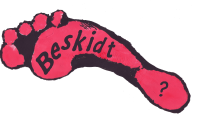
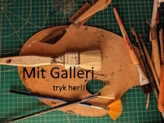
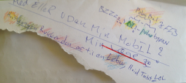
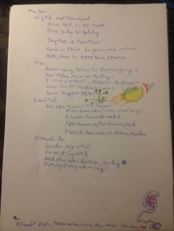
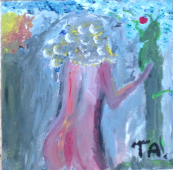
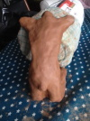
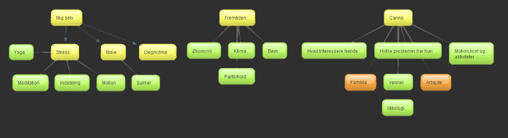

Paranoid Hotel
Alt og intet, Fra en tabt sjæl.
That is something that appears but does not happen
Herunder kan man blive klog på mit liv. Siden indeholder video, musik, og digte mm. Håber du får det bedste ud fra denne hjemmeside.
Meget af indholdet er skrevet imens jeg har været indlagt, derfor er noget af indholdet lidt sort, men jeg har valgt at skrive det hele ufiltreret! Jeg elsker jer alle sammen lige højt Herfra, men er godt træt af at høre hvor syg jeg er. Så sig jeres mening, "med livet", eller hold jeres kæft, jeg er faktisk ligeglad og hvis i chikanere mig, så får i et spark i fissen.
Jeg startede på dette dokument 08-28-2022 Det er nu Dags Dato (mangler dato endnu). Indlæget skal læses i "lyset", af at jeg har fået det markant bedre undervejs. Så jeg gentager mig nok under vejs ;D Men alt gav mening for mig på det givende tidspunkt. Jeg har valgt at lade det være Ufiltreret! men læg mærke til hvordan mine tanker flyver fra vestre mod højre, imens jeg skriver. Så er der bare tilbage at sige god læsning. PS. jeg har prøvet at begrænse mig til et lille indlæg! Og ellers får i den alligevel. Håber det er bare lidt sindssygt god læsning.
Alt startede for 21 år siden. Lad os bare sige at psykiatrien er blevet Væsentlig bedre på de mange år. Der er dog særskilte episoder jeg vælger at hænge fast i, tænke på, og stadig prøver at bearbejde. Nogen gange har jeg stået uforstående som en flue på vægen, fanget som en lus mellem to negle. Men Elektrochok har også ændret sig, for mig, på de 21 år der gik i mellem de to chok. Nu lever jeg med resten, ind i mellem, ind over, og ind i mig selv. Nu vælger jeg at skrive om det. Uden at træde nogle "mennesker" over tæerne. Men nogen gange bliver man nødt til at kalde/Råbe højt, specielt når man føler at man ikke bliver hørt, forstået, og kastet rundt med. Jeg har det stadigt sådan. Men engang i mellem bliver man overrasket også på det værste. Alle ens første antagelser holder stik. Antagelser om debile ansatte, der ikke burde have et job. Jeg nævner ingen navne.
Denne side er nøje gennemtænkt. Jeg har valgt at udvide tidslinjerne som jeg syntes det giver mening. Dvs. udvidet når jeg selv forstår hvad der står. For gud hvor er der meget lort ind i mellem. Du er velkommen Til at udvide de enkelte punkter, for at få et bedre indtryk for hvad der sker når man er sprit stiv og på rulleskøjter.
Jeg elsker at udtrykke mig selv. Dette gør jeg for det meste via digte og kultegninger. Digtene er en personlig afbildning af mine føelser i nuet, og fortiden. Hvis jeg nogensinde får udgivet noget skal værket hede "Skævt lagte brusten" ( mit liv i en nøddeskal ). Men nu kom den altså til at hede Paradise Hotel. Jeg opdatere siden mindst (måske) en gang om året ;D
Lige før indlæggelsen
- Syg bytur
-
Dec x, 2001
I et par uger, har jeg kørt i højt gear. Alt hvad jeg rør ved går op i en højere enhed. Jeg bruger alt min tid på at ryge fed og spille computer. En aften har jeg været vågen i 72 timer, Jeg har spist ginseng og drukket kaffe for at holde mig kørende. Vi sidder hos vores 'dealer' og ryger hash, indtil videre en dejlig aften. Så er det som om der er noget der slår klik, og pludselig tror jeg at jeg har opfundet kunstig intelligens. Jeg kan ikke stoppe med at snakke, og de andre må bede mig om at holde kæft. Jeg snakker videre og videre. Det ender med at de beder mig om at gå i seng. Men hvordan kan man sove når man lige har opfundet kunstig intelligens. Jeg vandrer rundt på de forskellige køkkener på kollegiet. Sætter mig ned på et af dem og begynder at læse avisen, folk glor lidt underligt på mig, det er første gang jeg er på deres køkken.
En af gutterne beslutter sig for at følge op på hvad der er sket med mig, og han finder mig vandrende rundt ude på gangene på kollegiet. Han tager mig tilbage på mit værelse, og sidder med mig for at prøve at få mig til at sove. Jeg fortæller ham at jeg nok skal lægge mig til at sove, og jeg overtaler ham til at lade mig være alene. Jeg falder i midlertidigt ikke i søvn. Jeg tænder fjernsynet, og ser et eller andet underligt. Jeg føler at det de siger i fjernsynet er møntet på mig. Jeg tror jeg er blevet en del af en hemmelig gruppe, som allerede ved alt hvad jeg ved. Der går noget tid med at fatte hvad det hele handler om. Til sidst tænker jeg at grundet mit fund af kunstig intelligens må jeg være rig og er overbevist om at der står millioner på min konto. kl. er nu 7 om morgenen. Jeg beslutter mig for at gå ned til den nærmeste ATM for at hæve nogen af mine mange penge.
På vejen der ned kigger jeg ind af folks vinduer, og føler mig overvåget. Jeg tænker at jeg bliver nødt til at ryste den hemmelige gruppe af. Jeg står ved et lyskryds, hvor der kommer en scooter kørende. Jeg kan se at manden på scooteren har en kasket på. Han må være en af vennerne. Jeg sætter mig op på hans scooter og beder ham om at køre. Han vender sig om og ser forskrækket på mig, og siger ”Du ved godt der er meget politi i området” Vi køre over vejen og jeg beder ham om at standse. Jeg stiger af hans scooter og siger tak for hjælpen. Næste stop på vejen er en skoletandlæge. Det er lidt svært at forklare. Jeg havde smadret munden i et uheld da jeg var 19. Nu mente jeg at vi lige kunne få det fixet på vejen. Kan ikke rigtig huske hvordan jeg kom videre der fra, men jeg fik at vide at det ikke var et sted for mig.
Jeg fortsatte min færd til den nærmeste ATM. Jeg ved ikke hvor jeg havde det fra, måske computerspillet, men jeg var nu i stand til at blive usynlig. Jeg benyttede denne evne flere gange når jeg troede folk holdte øje med mig. Jeg kom endeligt frem til Lyngby Stor Center, hvor jeg fandt en ATM. Som jeg husker det mødte jeg en dreng på omkring 13, og jeg havde en underlig samtale med ham da jeg troede at han var en af mine kammerater fra fortiden. Nu stod jeg foran ATM’en men turde ikke at bruge mit dankort, da det selvfølgeligt var overvåget. Jeg besluttede mig for at få noget mad. Så jeg fandt en McDonalds, jeg fandt en medarbejder der var i gang med at åbne stedet. Han sagde jeg måtte komme tilbage efter en times tid. Jeg brokkede mig stort og sagde det var dårlig service. Jeg gik en tur i Centeret.
Jeg kom til et hotel hvor jeg så en dame der gik op af nogle trapper. Jeg besluttede mig for at følge efter. Hun gik ind i et konferencelokale, hvor der stod en bærbar computer. Der sad 8 → 10 mennesker og gjorde sig klar til et møde. Jeg tænkte at de var der pga. mig, og at jeg skulle fortælle dem om min nye viden om kunstig intelligens. Jeg gik hen til computeren og begyndte mit oplæg. Det endte med at hotel personel tilkaldte politiet. Jeg husker at ende i kachotten hvor jeg lå på gulvet og stirrede op i en firkantet ventilation. Der var noget underligt ved den, og jeg kunne ikke slippe den af syne. Jeg bankede på døren og bad om at få noget vand. Det fik jeg. Men ikke 2,3 og 4 gang jeg råbte om vand. Der gik en uvis tid, og så blev jeg kørt på den lukkede. På vej i politibilen hentydede jeg flere gange at de to politi mænd var bøsser. Ikke fordi jeg normalt har fordomme den vej, jeg ville bare se deres reaktion. De tog det med et smil. Jeg er aldrig før blevet behandlet så anstændigt. På vejen fik jeg også et kig på deres GPS system i bilen. Den opførte sig selvfølgeligt meget mistænksomt. Så var kampen skudt i gang!!
2001 Første Indlæggelse
- lukket afdeling Ballerup
-
Dec x, 2001
Efter min Hash-psykose, står jeg helt af, og i de næste par måneder bliver der prøvet alt for at få mig tilbage på ret køl, herunder elektro-shock og alt den medecin man kunne tænke sig. Bare det at børste tænder var på et tidspunkt umuligt. Jeg ender med at blive stabil på Clozapine (også kendt som Leponex)
- Den dag jeg dødede
-
Jeg ligger låst fast i bælte på mit værelse. Jeg kan ikke huske hvordan jeg var kommet der, eller hvorfor.
Der sidder en nattevagt på mig. Han er godt træt af mig, da jeg nu har ligget i flere timer og råbt skældsord til ham. I mit hoved ville lægerne undersøge mig, og de kunne ikke gå i gang uden mit sammentygge. Der var en chance for at jeg ville dø når de åbnede min hjerne op.
Jeg ligger og skriger på at de skal holde sig væk. Det gør jeg i flere timer. Nattevagten var god, jeg fatter stadig ikke den dag i dag at han tog det så roligt.
Han prøvede at berolige mig, og var god til det. I mit hoved blev det til at han var lægen der skulle overtale mig til at gå på operationsbordet. Efter lang tid indvilligede jeg og faldt stille hen. Her døde jeg. Jeg husker det som om jeg forlod min krop.
Dagen efter da jeg vågnede kunne jeg ikke forstå jeg var i live. Måske døde jeg rigtigt?
- Svinet
-
Jeg husker specielt en haltende undskyldning af et menneske. Han var altid et nedværdigende, magtsygt, modbydeligt svin.
Jeg husker ham kommende ud fra en patients værelse, med hendes hår i hånden, trækkende hende ud af værelset, med den eneste grund at hun ikke måtte sove længere end til kl.8:00.
Han var også et svin over for mig. Det var hans ret at se ned på folk, der var i en dårligere position end ham selv.
Jeg mødte ham nogle år senere da jeg var i Helsingør svømmehal. Jeg kunne se frygten i hans øjne. Han vidste han havde gjort mig uret. Jeg var ”Så” tæt på at give ham et ordentligt skub i vanden. Men han var der med sit barnebarn så jeg lod det passere. Men det var skønt at se ham være bange. Jeg ville ikke have skubbet ham uanset hvad, for jeg er et ordentligt menneske!
- Elektro Shock
-
Der gik lang tid før jeg indvilligede i at få elektro shock. Det var min onkel (overlæge) som fortalte mig at der var mange hvor psykosen blev brudt
Jeg fik stukket en pind i munden til at bide sammen om, og resten kan jeg ikke huske!
Den første uge efter behandlingen, kunne jeg pludselig fungere normalt, alt var som det sku, og alle var glade. Så røg jeg tilbage til min psykose.
Den næste tid var svær for mig. Det var som om at mit sind var blevet nulstillet.
Jeg kan bedst forklare det ved et eksempel:
Da jeg gik i bad glemte jeg sæben, og fandt først ud af jeg manglede den næste gang jeg skulle i bad.
Næste gang jeg skulle i bad huskede jeg at jeg havde glemt sæben da jeg efterfølgende kom ind på mit værelse.
Så huskede jeg sæben da jeg skulle ud af badeværelset.
Til sidst huskede jeg sæben!Det var hele min hukommelse der var fucked!
Nu tænker jeg bare på alle de andre ting i mit sind der også er blevet fucked.
Den dag i dag har jeg problemer med hukommelsen, og jeg er ikke sikker på hvad der skyldes elektro-shock.Anden gang jeg blev indlagt ville de give mig samme behandling, men da min familie kunne fortælle at det ikke havde hjulpet første gang, kom det heldigvis ikke på tale. Min søster, som er praktiserende læge, var dog meget i tvivl, da jeg var ekstrem psykotisk. Men hun holdt fast i at de ikke skulle give mig det den anden gang. Og det er jeg den dag i dag taknemmelig for.
Her ved tredje indlæggelse var jeg glad for den elektro-shock jeg fik. Den hjalp mig til hvor jeg er nu .
- Sol op/ned - gang
-
Jeg sad i krea lokalet, sammen med en af de fineste personaler man kunne tænke sig. En kærlig varm mand, med empati og indlevelse.
I radioen spiller ”Kys det nu (Det satans Liv)” med TV2. Jeg græder lidt.Jeg sidder og kigger på hvad han tegner. Det er en åben sø med et lille skib og nogle måger.
På maleriet udfolder der sig en smuk solopgang eller solnedgang. Metaforen rammer mig hårdt. Og i et par timer, er jeg i tvivl om hvorvidt det er en sol op/ned- gang.
Han kan se på mig at det betyder meget for mig, så til sidst for jeg lov til at bestemme. Vi bliver enige om at det er en sol opgang!Jeg har billedet et sted … hvis jeg finder det skal jeg nok vise jer det.
- Fortrudt fortid
-
Der er mange ting igennem livet jeg har fortrudt. Da du slog op med din kæreste gjorde jeg intet. Inderst inde ville jeg bare være sammen med dig. Vi har begge trådt på hinandens følelser. Jeg havde svært ved at se hvad der kunne gøre dig glad. Min opmærksomhed var desværre ikke nok. Jeg blev kold og følelses forladt med tiden. Vi groede stille og roligt længere væk fra hinanden. Nu har jeg kun mindet om dig tilbage. Med tiden kom der andre kvinder, men de var alle i skyggen af dig!
Gid jeg fik en chance mere!
- Skal jeg dø
-
Jeg har igen vold ondt i hovedet, jeg har opkastfornemmelse og kan mærke mit blodtryk i min vestre tinding.
Jeg har ondt i mit venstre øje og har tinnitus i venstre øre …
Hvis jeg ikke overlever det lort, så ved i hvad det var der tog livet af mig …
Elsker jer alle … Jeg syntes bare det var noget lort at det skulle ende sådan …
Begynder at få tricks i højre arm, godt jeg skal til lægen i morgen …
Det har aldrig været så slemt før … Er lige pludselig blevet snottet kun i venstre side … Jeg er blevet ultra følsom.
Nå nu har jeg det lidt bedre. Nu går jeg ud og spiser, og går i seng.
Jeg ville bare lige skrive hvordan jeg havde det, så jeg kan læse det i morgen … For håbeligt!
- Digt (2001)
-
Lidt af gangen:
De glemmer mig ej
Bare en hilsen fra familie og vennerHvem der ej glemmer mig
Roligt strammes bæltet løstRemmene strammes, og
Løsnes som guderne lyster det
Som søster lyster det
Roligt men lyttende
Men lyttende altid (i en god cirkel) for evigt.For nu er min skat med mig, som, …
Var det første gang IGEN!
- Digt (2001)
-
Jeg lever kun for at finde
Med et slag vil mit liv være
Jeg ved hvad løkken (lykken) er
Men den er ude af min favn
Beslut dig eller dø
- Digt (23 dec. 2001)
-
Indre uenighed:
Pligt kontra fornyelse
behovet herom
sindet splittet,
hvorfor stoppe?
Et påbegyndt kapitel sluttes,
hvorfor alle disse spørgsmål?
De må besvares.Den direkte videnskab
uden en fuldstændig forståelse.
Der er mange sider
af kun et spørgsmål.
Skal det ske?Mange beslutninger træffes.
De fleste er med fuld enighed
videnskaben kontra mennesket
er straks sværere.Opdraget med videnskaben,
men fulgt af mennesket.
Videnskaben en kundskab.
Mennesket mig selv.Et utal af muligheder
men kun en rigtig vej.
En vej, der skal køre
igennem begge marker.Men, hvor bliver høsten størst?
Jeg er klar til høst.
Der skal ikke ventes for længe.
Så hvad er det, der holder mig tilbage?
Hvorfor er det, jeg ikke griber om leen.At efterlade den trygge hverdag,
folks forventninger
pligten
spørgsmålet om fuldførelse.Jeg har nogle ideer.
Jeg følger mine instinkter,
men får jeg tilfredsstillet
mine behov?
Det er min overbevisning.Jeg ser mig selv udefra,
stående ved en vigtig skillevej.
Min gode ven ”længsel på viden”
er i tvivl,
begge veje er gunstige.
Min længsel på fornyelse
vil gerne se, hvad der gemmer
sig bag den nye bakke.
Størst af alt trækker
nysgerrigheden.
Måske er det muligt, at
finde sine rødder.
Stedet ment til at plante
sine afgrøder og høste gevinsten.Men, det er farligt at
forlade den kendte vej!
- Digt (25.jan 2002)
-
JEG GRÆDER:
Husk, jeg også elsker
JER ALLE.
Min tid her bliver lang.Besøg mig ofte,
jeg har brug for jeres støtte.
Jeg græder for alle,
alle er fanget,
hvilken dimension
er sagen uvelkommen.
Jeg er altid hos jer,
jeg bære på alles skyld
for det meste alene.De tør ikke se mit
sande jeg
og hvis de gør,
lægges byrden på dem.Alle mine synder
ramler sammen
i et til to sekunder,
en gang om
dagen.
Systemet
er ved at gå op.
Jeg mangler stadig
(uendelig) af tid.
- Digt (2001)
-
Bjarne du skulle:
Se objektivt
se dig selv af i sømmene
benyt dit bedste værktøj
og på det grundlag:
bliv et med naturen
blomstre op som en smuk anemone
Smil en smule, hvis: du møder en ven.
- Note
-
Værdier i min hverdag ... FRATAGET mig:
Mat, madlavning, friheden til at gå ud…..tanken
om at der ingen tillid til migJeg vil gerne have en konstruktiv kritik
af hvad jeg gør ( jens er god til det)Jeg føler mig låst fast….da der er absolut
ingen ting at laveOrdet Fritid har fået en ny mening.
- Note
-
Endeligt på manual gear:
Jeg kan nu tydeligt se forskellen mellem:
1: f(0,1) + f(1,1) +f(1,0) + f(0,0) =g(x, y)
- Digt
-
En gammel mands erfaringer:
De tapper mig for viden
som man tapper en tønde for vin.Drengen spurgte faderen, hvorfor
falder bladene om efteråret?
Til det svarede faderen:
Så, så min dreng det
finder du jo nok ud af
når du bliver introduceret for P….
Men far, hvad er politik?
- Digt (30.jan 2002)
-
Mit hoved smerter,
hvorfor!
En simpel løsning,
jeg tænker for stærkt.
Men hvorfor!
Enkelt!
Jeg har set Gud!
Matematikken viste vejen.
- Digt (3.feb 2002)
-
Hvor mange liv skal man igennem
før man når endestationen. Hvor valget træffes,
finder man mig og hele kloden. Kan fuglenes sang
forstås, det kan tage årstider. At se fugle flyve i
tæppe, varmer ens hjerte. Kan man dø af tro, nej man
kan leve for sin tro, det er en gave at kunne give.
- Digt (5.feb 2002)
-
Forvirring kontra fornyelse:
Hvem holder jorden sammen?
Er det dem vi betragter som syge?
Nu er her ro igen,
men stadig en indre fortrydelse.
Jeg kommer til at tænke
over lidt for meget,
men i ny og næ
falder tankerne
endnu engang
på plads.
- Digt (9.feb 2002)
-
Kedsomheden:
Uden ende og stadig voksende.
- Digt (11.feb 2002)
-
Mit liv fornyet:
Et lys bryder tusmørket,
inden skyggerne bliver lange.
En tanke, bryder sindet,
som solen står i horisonten.
- Digt (11.feb 2002)
-
Omgivelserne:
En belastning, men stadig sikret.
Tiden går og
solen skinner, men døren låst.
Tiden går, og
græsset er grønt, men må ikke betrædes.
- Digt
-
Balancen i mig:
Som at køre en bil med automat gear.
Bilen har desværre en max. leve-TID.
En gang imellem køre jeg Farari med uendelig gear.
Andre gange er det en brugt rusten Skoda
mon man kan få en rusten Skoda til at køre på vand.
- Digt
-
Hæmninger eller hemmeligheder:
Jeg føler mig klar til høst men jeg
befinder mig nu i et paradis der ikke skal
brydes. Thi jeg har det perfekt nu.
Alle ting er nu i balance. Det er som at
følge en summation af funktioner.
- Digt
-
3 lange dage:
Uden et enkelt hvæs , 5 dage tilbage
stadig en smule småforvirret, stresset
virkeligheden banker stille på
trangen til at ryge, dræber alle andre tanker.
- Digt (11.feb 2002)
-
Dyret anspores
instinktet træder frem
adrenalinet forøges
noget ligger gemt
det vil op til overfladen.
- Digt (12.feb 2002)
-
Endnu engang
græder jeg alles tåre,
intet venskab bære dimension løs tid,
er der dog ingen forståelse,
mon ens eget blod holder.
- Digt
-
8 dage er lange:
Jeg prøver at stoppe
men, det er sku svært.
Alle disse navne….exc.Jeg keder mig.
Hvad skal jeg dog finde på,
alt den spildtid,
hvad laver jeg dog her.En skør mands fortælling,
giver aldrig nogen mening.
Åben dine øjne.
Slip mig ud.Verdenen drejer sig,
men kun rundt om mig.
Husk disse vise ord,
bland dig uden om.
- Digt (18.feb 2002)
-
At være FANGET:
Som blommen
i ægget
smager godt.
Men, det er stadig
en beslutning
en beslutning
en beslutning
ARGH
endnu et paradoks.
Jeg kan ikke huske,
hvor langt eller
hvad.
- Digt (21.feb 2002)
-
At være hjemme:
En varm fornemmelse
bredte sig i lokalet.
Endelig hørte man
til det rigtige sted,
med andre ord
ELSK OG BLIV ELSKET.
- svømmehallen
-
altid jern på!
Jeg var vild med en kvinde på Ballerup lukkede. Hun var personale. Jeg havde igen bare lyst til alle kvinder, bare de havde en puls. Men hende her var ekstra god. Hun afviste mig mange gange, men hun vidste got jeg ville ha hende. Hun tog mig med i et varmtvands bassin der var på Ballerup. Jeg kunne ikke rigtig komme op ad vandet. Hun vidste det godt. Det gjorde det bare mere frækt. Når jeg svømmer normalt. Bliver jeg nogen gange nødt til at skifte bane. bange for at jeg ikke kan komme op ad vandet den næste time eller mer. Jeg har aldrig helt lært at styre mig. Min fantasi er desværre lidt for veludviklet! glæder mig stadig til at komme ud for at svømme igen.
- Digt (22.feb 2002)
-
Natten:
Natten er stadig ung.
Vi ser os omkring,
alle sover. Jeg er vågen
af kun en grund. Jeg
vil/kan ikke sove.
Jeg glæder mig for meget.Kl. er nu 01.22 og der er
snart en god nats søvn
til at min familie kommer
og tager mig væk fra
dette galehus ,hjem i deres
omsorg, hjem i sikkerhed
01.25 nu må jeg sove
5 min. til at jeg kan
ligge og stirre op i
det tomme loft!
- Digt
-
Sneen:
Sneen former sig, som man vil have den,
livet former sig ligeså.
Mit liv er med et slag fornyet
er det medicinen, jeg tvivler.
- Digt (23.feb 2002)
-
FAR:
Far, jeg ser frem til den dag
vi igen skal se et flod
dukke op og forsvinde.
(den var en smule indtern).Jeg husker, hvordan du viste mig alt.
Jeg husker dig smide min lille torsk ud
men, du skal vide en ting,
uanset hvordan vi har opført os,
elsker jeg den tid.Jeg husker vi gik rundt om Ven
med fuld oppakning og det eneste
spiselige var en plade marabue og
en enkelt fladfisk.
- Digt (23.feb 2002)
-
MOR:
Mor min kære mor
lær dig selv at kende
og på det grundlag
bliv et med naturen.Jeg er et med naturen.
Mor, jeg elsker dig,
alle elsker dig,
hvis ikke alle forstår,
er det fordi de ikke kender din sjæl.Du er nu et med naturen.
Jeg håber du forstår,
jeg håber du ved,
jeg ved, at du forstår,
jeg elsker, at du ved.
- Digt (23.feb 2002)
-
En smuk morgen:
En smuk morgen brød
lyset de tusmørke der
havde ligget og skummelt et par dage.
Alle vidste det ville blive
en god dag. Godtnok var
det gråvejr, men inderst inde
vidste han, at bag alle
disse skyer skinnede solen altid.
Ude i universet var solen aldrig
slukket.
- Digt
-
Kan man dø af kærlighed
svaret er ja
mange gange endda.
For megen kærlighed gør skør
man mærker alting i sin (din) krop
være i fuld balance.
- Hvad sker der her?
-
Jeg forelsker mig i den sødeste pige. Jeg er som besat, og vi indleder et forhold, hun rykker med tiden på åben, hvor jeg besøger hende imens jeg stadig er på lukkede. I dag husker jeg ikke så meget af det hele. "kun det vigtigste". Men jeg husker alle mine følelser. Og tænker at det var det vigtigste for mig.
- Digt
-
Livet en gåde eller illusion:
Stykket sammen
pusle
hænger det nu sammen?
Nej!
Alt er et paradoks.
Husk at ringe
husk at spare.
Der er uendelig energi/men delt
i hvor lang tid:
Vandet løber, døren knirker,
hvem er det, der får udbyttet.
Menneskerne, der hjælper mig
alt som taget ud fra min
ERINDRING.
- Digt
-
Kunsten at være "NORMAL":
Skal/må man dele sine sorger
et sted ment til at være alene/flere.
Mit liv fængslet, usikkert og forladt.
Min sjæl er fanget i tusmørket,
den vil op til overfladen,
ånd dybt, høre den klare tone.Jeg er tilbage.
jeg kan nu føle min rygrad .
- Forklaring
-
Jeg lære Religion af medpatient
Jeg snakker med en pt. der er meget religiøs, og kommer fra Sydamerika. Jeg kan ikke forstå sproget, men vi kan alligevel forstå hinanden. han viser mig hvordan Sydamerika alle er troende, og jeg tolker det som om at hele Sydamerika tror på mig som gud. Det giver mig enorme kræfter. Jeg tænker jeg er ikke gud, jeg er Jesus, jeg bære alles skam, jeg tager alt på mig!
Senere (ugen efter) ligner han en der er blevet voldtaget hele natten. Som han nok også er. Jeg tager det på mig, jeg tænker det er mig der har misbrugt hans guds børn, fordi jeg også har tappet energi i hans brønd.
Jeg prøver at sige undskyld, men det lykkedes aldrig. Jeg føler hele Sydamerika som min rygrad !!!! Den klare tone, Mit Liv!
- Digt
-
Den gamles fortælling:
”Ja, nu skal du bare høre, min dreng” sagde den gamle
mands stemme. ”Det er vigtigt at vide, hvem ens venner
er” fortsatte den gamle far. ”Man skal, man må, man ville”
tænkte sønnen. Hvis tanker var opslugt af helt andre ting.
Kl. er 9 minutter i 12
varmen i os selv
som en kold snevejrsdag
smeltet til vand
iskrystaller omringer os
ikke.Kære fader i ånden, tak for din
opbakning,. De doper mig på denne afdeling. Jeg kan knap leve
En smuk dag venter, alle er glade
og folk ved, hvor de høre til.
Alt spender til, og man føler rygsøjlen
igen er der balance i systemet,
men sjæleligt en realitet,
et dystert håb ligger tilbage!
solen falder snart igennem de klare ruder,
det er snart sommer,
men vi skal først gennem forår.
Jeg ville ønske i et andet liv.
- Digt
-
Franz lipkind ":
Tal med fuglene – se sindssyg ud
brevene
Filmens konklusion:
Ikke alle er til at stole på
ikke alle ser ud som deres indre.
Læg hånden på,
lad dig ikke narre.
En ad gangen
vær dig selv
- Digt
-
Lorenzo:
Giv ham rollen.
Han fik den.
Masser af mennesker
pressen på,
der er mere
ham med hjelmen tager -> over
succes-Fang deres opmærksomhed.
Det er gjort.
Folk er måløse
lyden er på
samarbejde.
Når folk er chokeret
derpå bifald
gør grin med en alvorlig situation.
Folk griner
spring time
sæt tyskeren til det.
- Digt
-
Et digt forsvundet:
Mit livsværk fornyet
intet vil nogensinde stoppe mig.
Jeg er her af en årsag.Jeg skal finde min kære.
Jeg har brug for alles støtte.
Der er nu kun en ting, der hindre mig
folk vil så gerne have jeg skal sove.Men, hvordan skal jeg dog sove,
når mit hjerte hamre med en puls > 100Jeg kan endnu engang føle alting,
men nu også omkring mig,
det er som om, at den medicin
de giver mig, bare får mig til,
at tænke 3 gange så hurtigt
eller for at uddybe min mening,
hovedregning i binære øhh, når
nej, firnære tal – systemer.De smukke unge mennesker
nu går vi bort (stuearrest)
min ytringsfrihed er frataget mig.
Frihed til at drømme
svært at dømme.Jeg kender nu alles kvaler,
men er det nok, hvad med mig selv.
Jeg er for god til matematik.
- Digt (24.feb 2002)
-
Kunsten at blande sig uden om:
Jeg er en mand af mange ord. Jeg ville ønske at jeg bare
en gang imellem kunne holde min kæft og bare lytte til,
hvad folk havde at sige mig.Hvordan reagere jeg:
Jeg har det med, at vide alt for meget om ting jeg ikke ved
noget om……så hvad gør jeg…….jeg holder sku bare min
kæft og lytter efter. En gang imellem stiller jeg for mange
krav til mine omgivelser, men det er fordi jeg keder
mig…..Og hvis det nogen sinde sker, så må jeg på forhånd
sige undskyld, det er ikke det, der er meningen…,
TÆNK FØR DU TALER!!!!!!!
- Digt (25.feb 2002)
-
Indre forvirring:
Endelig føler jeg en indre ro
mine tanker ang. diverse programmer
har lagt sig på det jeg vil betragte
som ”Standby”, så nu er jeg en
smule træt. De prøver at lulle mig
i søvn med piller, der tager I
grueligt galt. Ingen skal bestemme over mig.
Jeg er min egen herre.
- Digt (25.feb 2002)
-
At hjælpe andre folk er åbenbart
ikke en løsning. Man må lade folk
sejle i deres egen sø. ”Lad mig være” siger alle
ikke andre end Bruno forstår mig.
”Monas solarium” med ”Tv 2” åh hva fan
fanget indespærret med tosser omkring
mig, hvordan skal jeg nogensinde komme
væk. Jeg er jo omgivet af tosser.
2002 åben afdeling Ballerup
- helt ny igen
-
Feb x, 2002
I denne periode tager jeg 25 kg på den første måned. Jeg har stadig strækmærker. Jeg keder mig og har ikke mod på noget som helst. Alligevel prøver jeg at lære 10-finger systemet på min computer. (endnu en ting jeg skal tænke på senere på C3). Jeg køber mine rulleskøjter, og ruller frem og tilbage til den nærmeste svømmehal. Det starter med at være en fælles aktivitet men jeg klare den også fint alene.
En fra personalet siger jeg skal på pension resten af livet. Jeg takker pænt "Nej Tak!". Jeg tænker "gad vide hvor mange der hopper på den?" Jeg fik besøg af en gammel ven og hans kæreste. De gav mig en bog, men den var for svær at tygge sig gennem. Jeg var glad for den alligevel, da den stod som en mulighed på hylden. jeg lukker aldrig helt for muligheder, da det er dem der åbner døre i livet.
Min Flamme, Mit Liv ...
Fra den lukkede, var dejlig og hun kunne også lide mig. Men jeg brændte hende af. Jeg sagde til hende, at vi blev nødt til at vente indtil vi begge var lidt mere stabile. "Ring til mig om ½år så ser vi hvad der sker"
Så ringer hun et halvt år senere . . . Jeg ligger og sover, tager tlf. og efter hun siger det er hende, udbryder jeg bare med "Jeg er træt, jeg gider ikke" og jeg smækker på. Da jeg vågnede, var jeg i mega dårligt humør, for jeg havde ikke hendes tlf. nummer!!! Tænker nogen af digtene fra den lukkede handlede om hende.
- Digt (6.Mar 2002)
-
Så er det snart påske
kærligheden gør mig skør.
Jeg elsker mig selv, er det
så svært at forstå.
- Digt (11.mar 2002)
-
Lykken:
Hvis man tæller hvert sekund, føles tiden langsommere
jeg mærker på min egen krop, hvordan Venstres politik virker.
Ja, der er jo ikke ligefrem sild på bordet!
Kan de ikke bare enes!
Alt, hvad vi beder for, er et lykkeligt liv
ak, kvinde min i verden, hvor gemmer du dig,
hvert sekund du er væk, er en prøvelse
du tænder et lys inderst i mig.Jeg finder en person hver dag, som jeg sætter min tillid til
men, kun en som dig,
er mit et og alt.
- Digt (12.mar 2002)
-
Tid:
Dagen, som den nu engang går,
dagen, som er åhh så lang,
ugen der gik, får vi aldrig igen,
ugen der aldrig får nogen ende,
hjertet er smukt som det slår,
så smukt som tiden går.Spørg mig ikke om vej,
thi kun Gud kender dette svar.Natten en befrielse
månen en gud
mon man kan lide af ulykkelig kærlighed,
kun Gud ved det.
- Digt (15.mar 2002)
-
FRA POESI TIL VIRKELIGHED
Jeg er nærmest lykkelig
at se to mennesker stå så tæt,
de vil gå igennem ild og vand
for at føle hinanden i vindens susen.
Jeg mangler mine minder.
Jeg skal snakke med en psykolog.
- Digt (16.mar 2002)
-
HVEM ER GUD
Hvem er Gud?
Der er lidt af ham i os alle
også i dig, og lidt for meget i mig.
Hver dag er en ny lærdom.Hvad lover fremtiden os
ingen ved det.Ingen burde leve på fortidens minder,
men en gang imellem er det skønt at drømme sig tilbage.
- Digt (17.mar 2002)
-
Et barn gjort glad pga. klokkernes spil,
hvad har jeg gjort for at få et så smukt univers,
hvad har jeg lært
af mor og far:
Kærlighed findes i mange afskygninger.
Et blik kan være mere sigende end 1000 ord,
man skal ikke diskutere med folk, man er ligeglad med hvad mener.
- Mandag (18.mar 2002)
-
Tanker
Hvad har jeg opnået i dag:
Jeg slapper bedre af i kvinders nærvær, fordi der kun er en for mig
indtil jeg får et nej.Rygning er ikke et problem længere.
Skakspillet: kend dine stærke sider i livet
lad andre udvide din horisont eller udvid dem selv.Jeg er blevet mobbet igennem min tid
min dansklære Helle Kohl har tyranniseret mig.
Jeg er ked af, at jeg ikke har et bedre forhold til min farmor.
Hun elsker stjernetegn. Jeg kender intet til det.
- Digt (24.mar 2002)
-
Elskov Hvem, hvad og Hvorfor:
En kvinde bryder tankerne,
pas nu på du ikke forelsker dig,
det kommer helt af sig selv…en anden dag end i dag,
men hun er værd at vente på.Selvværd: det er smukt at hjælpe, men hvor leder det hen.
Jeg er en åben bog, jeg har en svær tid i møde.
Luk mig ud fra tankernes klør,
en fortsat fortvivlelse, har snart sin ende.Det er svært at træde ind i de voksnes rækker og lære at tage hensyn til alles behov men mest ens egne.
Folk må gøre hvad der passer dem, jeg skal lære at blande mig uden om når folk snakker
Min drøm er at alle kunne leve lige ”kvinde og mand”.
Jeg tror på det gode i alle mennesker, men så ikke alligevel. Der er nogen mennesker jeg bare ikke kan holde ud. Jeg prøver at smile og svare dem pænt men det er svært.
Kærligheden har jeg aldrig oplevet
- Fucked Up: (01 apr. 2002)
-
Så fandt jeg ud af det.
Voksne er bange for død og begravelse derfor lyver fjernsynet fjernsyn er til at bygge trygge rammer op for folk…..har du aldrig lagt mærke til hvor meget krig og kærlighed der er i denne verden .:.lol.:.jk jeg troede jeg havde fundet ud af måden hjernen virker på men nej så nemt var det ikke !!!!!!! En omvendt verden … det lyder spændende … jeg har meget svært ved at læse men ikke svært ved at se eller hører jeg er det man vil betragte som ordblind …men så igen, det har jeg sikkert også bildt mig ind, eller hvad ? Jeg kan mærke jeg skal have min medicin. Jeg elsker stavekontrol den rettede mig lige…hehe…argh! jeg er sulten nu gtg (Got To Go) så er der sat havregrød over …. Det er kun moden der er gammeldags !!!!!!! det var medicinen nu mangler havregrøden :) det er smilet der giver et 1 surhed :( der giver et 0…. Eller omvendt det kommer lidt an på hvilke vej tiden går!!!! Og så spørger man sig selv hvorfor det hedder informationssamfundet…LOL… Jeg har været heldig at gro op med 4 forældre! Det er godt nok en god medicin!! Ja havregrøden altså…HeHe…jk.(Just Kidding)
- Digt (02 apr. 2002)
-
Nogle vise ord om livet
han får det dobbelte tilbage,
det er der mange der gør,
men for det meste med latter
eller knust kærlighed.
- Digt (03 apr. 2002)
-
Elskov:
Safterne flyder
drømmens galskab
drifterne på max.
verdenen på hovedet
kærligheden buldre.
Ja, systemet er anderledes
kontrollen er svær.
- Digt (05 apr. 2002)
-
At være sindslidende
som at ride på et søm-bræt
smerten uden ende
sindet siger fra.At være fanget
som en dåse sardiner
bare uden en oplukker.Fuglenes sang
blomsternes dans
røgens leg
børns latter.
- Digt (06 apr. 2002)
-
Bordtennis på toppen
var ikke lige mig,
men når man ikke tæller point
går det helt af sig selv.Jeg skal vælge en sportsgren,
hvor jeg er et med naturen.
Jeg følger søens regler,
kajak er lige mig.Jeg ved ikke om kajak er stavet korrekt,
jeg er egentlig også ¾ ligeglad,
jeg fik lige at vide, at det staves med k,
jeg er langsom, men lynende intelligensMan må aldrig se en hund i øjnene.
- Digt (07 apr. 2002)
-
kl.24:09
Mine øjne er friske. Ved at iagttage folks kropssprog
lære man selv, hvordan man befærder sig i systemet.
Jeg mangler/savner min computer og min lommeregner.
Men, nu giver vi det tid, til at bearbejde alle
minderne, tid til at opbygge en personlighed.
- Tanker
-
At Leve
Der er en negativ side af alting, men hvem gider
tænke dybt omkring de dårlige sider af sig selv,
det er en del af livet som voksen at man har
lavet ged i den som ung/barn. Nu tager jeg det
en dag ad gangen og ser hvad der sker.
De fylder mig med piller, det er ok. bare jeg er glad.KÆRLIGHED UDEN ENDE ...
Kan man elske mere end en person.
Jeg mener det kan lade sig gøre,
at elske igen
”ja selvfølgelig” siger Frank
og han ved, hvad han snakker om.
Jeg skal lære at græde af glæde eller sorg,
men hvordan står det til,
er Daisy stadig den samme.
Det var en gammel flamme.
Jeg skal nok finde hende,mon hun er single.
Jeg skylder hende at blive rask først.
Jeg begære mange kvinder,
men indtil jeg har fået et svar,
kan jeg ikke elske andre,
men man kan jo aldrig vide,
hvor vinden blæser en hen!
- Digt (samlet apr. 2002)
-
Kvinder og tid:
Da Man var barn,
Var livet som en leg
ingen bange tanker
Plejet af ens omgivelserMan fik udrettet meget,
lærte at skrive, regne og tale.
Nu gør jeg det på ny.
bare som voksen.Man behøvede ikke at tænke på kvinder,
her bliver sætningerne komplekse
alt skal tilrettelæges, gennemtænkes
sagde jeg det rette?Jeg elsker livet
men mit bedste redskab var slidt op.
mit sind en kortslutning.
Jeg kan ikke forklare det,
andet end at min hjerne er hurtigere end før
men også i værre tilstand.Nu helt alene i min fortid
tænker jeg tilbage
sammen om det i nuet.
Jeg kan gøre det hele om,
hvis det bliver nødvendigtKan man kontrollere tiden,
måske skal man Bare,
sove i nattens mulm og mørke
og leve i dagens solskin.Men der sker altid fejl
det er menneskeligt
det svære er at rette dem
før de er gjort.
- Digt (09 apr. 2002)
-
Jeg er skarp i dag
Så sidder jeg i den bagende solvind,
det er nu rart med naturens stilhed,
vindens pust og skyernes formation,
bladet der langsomt triller i modvind
eller rettere sagt i hvirvelvind.der er intet, der kan forpurre mit øjeblik.
Jeg kender nu mig selv.
Det er svært at beskrive med ord,
men, man kan jo altid prøve.Jeg har igennem hårdt arbejde lært mig selv, hvad
det vil sige at kunne give.
At give direkte fra ens sjæl kræver mod.
Jeg skal lære, at blande mig uden om personlige ting.Med mine sanser skærpede er dette en hårfin balance,
en balance som imellem idræt og smøger.
- Digt (10 apr. 2002)
-
KÆRLIGHEDEN:
Intet kan erstatte den tid vi har haft sammen.
Jeg håber du vil opsøge mig, når jeg engang er rask.
Jeg ved du husker mig.
Det er tid til ,at spurvene forlader reden.Jeg tænker stadig konstant på dig,
jeg høre dig i fuglenes sang,
ser dig i månens skær,
mærker dig i vindens pust.Bare synet af dig
blænder mig
bedøver min sjæl.
Jeg ryster ved tanken.
- Pillerne (10 apr. 2002)
-
Pille Test
En pille her og 2 der
det starter langsomt
og så tager de ens tanker,
så får man dem langsomt igen.
Kuren skifter
hvad skal det hele dog ende med.Kl 21:15
Indtaget dagens godnat medicin
Kl 21:20
Jeg samler tankerne ved at tænde mig en smøg.
Radio 2 drøner i baggrunden.
Jeg begynder på at tænke på min barndom. Jeg har altid drømt om, at blive husket som den jeg er.
Kl 21:25
Jeg ved meget om min fortid,
men intet om min fremtid,
det rør mig ikke.
Det sidste jeg gør,
er som mange andre
dø af alderdom.
Jeg slukker min smøg og tænker på,
hvordan jeg skal komme ud af min i øjeblikket slumrende nutid, og begive mig ud i det ukendte
Kl 21:30
Jeg hoster og retter mig op i stolen,
tænker endnu engang tilbage
Det er til at blive skør af.
Jeg tager mine let fugtige sko af,
læner mig godt tilbage og tænker på den dag støttehjulene blev fjernet fra min cykel.
Kl 21:35
skifter til skyradio.
En smuk lyd rammer min sjæl, jeg læner mig tilbage og nyder det.
Kl 21:40
Jeg kan mærke mit syn er ved at flyde ud…”Tænder en smøg”.
Kl 21:45
TV2 ud af radio 2 tænder ild i min sjæl. Jeg får lyst til at danse og jeg er nu sikkert på, at Ditte bliver lukket ud af systemet.
Kl 21:50
Pillerne har ingen virkning på mig. Jeg forstår det ikke, men jeg begynder at blive småtræt. Jeg drikker 1l vand, mit hoved er varmt og jeg får sved på panden.SØVNEN BANKER STILLE PÅ:
Men jeg er stadig på toppen.
Der er ingen pille, der skal styre mit liv.
Jeg gør hvad der passer mig bedst.
Jeg lever indespærret, 0
men ,hvis jeg ikke var havnet her
ville jeg måske aldrig have mødt min kærlighed.NATURENS BRUTALITET:
En smuk sommerfugl
basker for hårdt med vingerne,
men en flyver,
sætter sig på en rød rose
og dræner den for nektarEn kors-edderkop spinder sit spind.
Sommerfuglen går lige i nettet.
Det er fødekæden,
hvem vil spise mig,
det er der nok ingen der vil.Kl 22:33
Jeg kan ikke længere digte.
Jeg er ved at falde i søvn.
Godnat folkens
- Digt (11 apr. 2002)
-
Jeg bliver aldrig alene, jeg er omgivet
af venner uanset hvor jeg går.
Når sandheden stirre en lige op i fjæset
ser man den ikke.
Et håb om en bedre verden holder mig kørende.At være elsket holder mig gående
at elske driver mig frem,
frem mod det ukendteVi lever i kaos
intet er sikkert
vi vinder intet ved at vente
og alt ved at leve.Kampen mod kaos,
universet står klart,
der er ikke nogen, der kan snyde mig.
Jeg er ved at lære, hvad det vil sige, at arbejde under pres.
Arbejde i et stort kaos.Jeg tror på videnskaben, og primtallenes umulige mønster.
- Digt (13 apr. 2002)
-
IndianerVen:
Ved hvornår kærlighed er på spil,
ved hvem, der er ens venner,
kan ikke skjule sig
for tiden arbejder mod ham.Ønsker at klare sig selv
med støtte fra venner og familie.Gemmer sig i skyggen af sig selv,
derved kommer han ingen vegne.
Tiden til at bryde med fortidens minder
altid en, der vil prøve grænser af.
- Digt (16 apr. 2002)
-
FREMGANG I MODVIND:
Klar til at være åben.
Alt er ikke perfekt,
men det er tæt nok,
det kan kun blive bedre.Se dig selv i øjnene,
se dit liv passere revy,
mange mænd er lokket i unåde,
men de fleste formår at forstå.Jeg stoler på lidt for mange mennesker,
men jeg kan blive snydt,
bare ikke, når jeg har fået min søvn,
folk kan sige, hvad de vil.Jeg frasortere mine sanse indtryk
og prøver, at lytte til mennesker jeg stoler på.
Alle prøver at påvirke mit sind,
det lykkedes nogle gange.Hver gang jeg får information
frasorterer jeg det irrelevante
og tager det andet op til diskussion.
Sådan klare jeg hverdagen.Livet går sin vante gang,
kærlighed overvinder alt.Kærlighed i dybet
kommer op til overfladen
livet får langsomt mening
ingen kan berøve mig min frihed.Jeg er mig selv nærmest,
familien bag mig,
venner ligeledes,
alle støtter mig i mine valg.Men, jeg glemmer aldrig mine sande venner
og de glemmer aldrig mig.
Jeg føler dem dybt i mit hjerte,
jeg håber så inderligt, at det er gengældtDen åben afdeling venter mig
adviseres skal vi alle.
- Digt (17 apr. 2002)
-
Livets Gang:
Kan man lære om livet, ved at betragte andre med en lænke om benet, er det nok en måde at gøre det på
ved at betragte sig selv objektivt, kan man også lære,
men betragter man sig selv for meget, kan man hurtigt blive ensom.
Der er behov for en objektiv afgørelse fra lægen,
en afgørelse udefra,
man skal kunne se sig selv i spejlet
aldrig lyv overfor dig selv
se realiteten i øjnene
vær åben for nye sanseindtryk
hold kontakterne i live.
Livet er et spil kort, hvor ingen kender det næste træk,
men i sport kan man altid blive bedre.
kærligheden står for spil,
kan kun vindes ved fælles indsats,
mister man mod på livet, mistes alt,
hvornår er man rask, systemet kan vurdere det.
Jeg er klar. Klar til at tage ansvar for mig selv
og mine omgivelser.
Jeg kender nu mig selv og ved at jeg kan
udvikle mig under de rigtige forhold.
En åben afdeling, hvor lænken om mit ben løsnes,
det er tid til at stå på egne ben!
- Tanke (18 apr. 2002)
-
bland dig udenom:
Brænd aldrig dine broer
bliv ved med at være dig selv
hold kontakterne i live
lev i nuet.der er en kvinde til hver en mand.
Selvtillid rykker grænser,
man skal ikke blande sig i hellig krig
eller rettere sagt, man skal ikke blande
sig i hvad folk tror på.
- Digt (29 apr. 2002)
-
En spand vand kastet
i hovedet
kan det håndteres
eller skal man acceptere,
at man er blevet våd,
hvor går grænserne?
Tvivlen, der hober sig op
alle disse følelser skal ud,
jeg så dine fejl,
er de der endnu?
Har jeg de samme fejl?
Jeg har frataget mig ansvaret.Nu skal de bygges op
rundt om det jeg betragter
som mine værdier.
- Digt (29 apr. 2002)
-
Gammel kærlighed kommer op
til overfladen,
jeg mærker hendes nærvær,
men ser hende kun i tankerne
nøgen klædt af
er det medicinen, der får mig til,
at se hende klart…..
eller er det musikken, der vækker
mindet om den forbudte kærlighed,
men dette er kun et håb
vækket til live pga. egne tab.
Hun står som et smil i horisonten
jeg husker hendes runde former
skabt til at nydes.
- Digt (30 apr. 2002)
-
Markeret forkert:
Der kommer ting op til overfladen.
Ting, der burde være glemt,
altid et spørgsmål om at placere
skylden.
Skal man altid stole på en
faglig vurdering og lade beslutningerne
taget hen over sit hovedet.
Jeg er måske den første, der
giver lidt modspil.Skal jeg standardiseres,
skal jeg have en dosis
svarende til alle andre,
hvis jeg har det godt
og jeg kan mærke jeg falder til
skal der straks prøves mere af.
Jeg føler mig som en prøveklud.
Lad mig være
lad mig blive bedre
jeg bearbejder mig selv
dag for dag
uge for uge
år for år
uhh ha det må være leponexen
siger I.
Men, det er mig, der er under lup
sætter mærkater på mit ”Jeg”
for at fastsætte mig i bås,
hvem er god nok til at sætte tal
på følelser…er du det!Jeg er passiviseret
endnu engang er man sat i bås
som et menneske uden indflydelse.
- Digt (maj. 2002)
-
Af Føle igen:
Så sidder jeg endnu engang
ned og filosofere.
Fuglenes kvidren bag walkmannes støj træder frem, men forsvinder
stille hen. Smøgen brænder
smukt. Mælkebøtterne titter
frem på græsplænen som…..
ses gennem en hvid T-shirt
glad sidder jeg og ser til
et let nervøs træk, og så er man
solgt. En tanke eller to
trykker ens hjerte til at yde
sit bedste.Mine tanker falder hele tiden
på det modsatte køn
et endeløs sted til at finde
energi, tanker man ved
aldrig kan blive til virkelighed.
- Digt (03 maj. 2002)
-
Vil så gerne Kold Tyrker:
At være viklet ind i heste tøjler,
arbejdet skrider frem,
jeg er i fokus
og vil stoppe rygningen,
det er som om cigarretter
bliver substitut for feden.
Jeg glæder mig til den
dag, jeg er stærk nok
til at slippe af med denne
last *tænder mig en smøg*
Jeg er styret af miljøet omkring mig,
men jeg har lært at sige fra
* smøgens slukkes *
- Digt (10 maj. 2002)
-
Fremtid i vente
En busk står og bevæger sig i vindens pust
dens grene flagre, men roden står fast,
jeg kan intet andet end at beskue den,
dens grønne blade skære mig i øjnene.Dens arme prøver at fange solen,
jeg sidder selv på samme måde
isoleret med min walkman
lytter til en ”sjæler”.Hele tiden nye erfaringer,
det er skønt,
en ny vej er nu lagt.
Gennem hårdt arbejde er alt muligt.En smuk dag er svær at gøre bedre,
men aldrig opgiv dine konstruktive tanker,
sørg for at din hverdag får indhold,
spørg mig ikke hvordan.Du er din egen herre,
man bygger sig selv op,
et håb om et bedre ”jeg”
tvinger en frem mod det ubekendte.Det gælder om at fastholde positiviteten,
jeg kan ikke længere græde over bagtagteller,
solen kaster snart lange skygger
og her sidder jeg i bar overkrop.Her er skønt,
alting sat i system,
så selv jeg kan finde rundt,
sikre trygge rammer.ens arbejde er gemt bort
ens person trukket frem
gemt i et stykke tid
livet under loop.
hvad så ”hvordan er livet”
Det skrider støt frem
men frem mod hvad.
- Digt (15 maj. 2002)
-
Bogstaverne flyder ud
men danner en historie
koncentration
jeg er afbalanceret
jeg skal ind i døgnets rytme.Jeg fanger hendes blik,
men jeg gør ikke noget ved det,
jeg er bange,
men så alligevel ikke,jeg burde gribe chancen,
jeg husker ikke hendes navn,
jeg vil ikke ydmyge mig selv
ved endnu engang spørge til hendes navn,så jeg lader bare blikket glane
håber hun åbner op,
hvad vil der så ske.
Jeg gemmer mig i skyggen af mange.Kommer jeg videre på den måde,
nej, men jeg får distanceret forholdet,
jeg husker hendes smil, hendes natur
og lader det blive ved tanken.Jeg er bange,
bange for et nederlag,
men så alligevel ikke.
Hvad skal der dog blive af mig,
skal alt være op til skæbnen.Der er altid en eller to ting, der kan gøres,
at vælge kan være svært,
men det er nemmest, at kaste sig ud i det
med åbent sind.Medicinen ligger på bordet
venter til kl. 21.00
eller deromkring.
Det hele er en lang kø,venter i køen på medicin og omsorg,
venter på ting, der ikke har været
vigtige før nu.
Livet går hånd i hånd med døden.
Jeg tænker på kræft, færdselsuheld…exc.ting, man må acceptere som en del af livet,
venter på en terminering af programmet,
kun folk med stærke gener for lov til
at reproducere de mennesker med
flest livserfaringer med størst glæde.Der er ingen, der skal fortælle mig,
hvem jeg er. Det ved jeg bedst selv.
Jeg er blevet enorm åben, og tager
imod enhver situation som et
problem, der skal behandles..Dette fører mig ikke videre.
Nogen gange er det nok bedst, at springe
i med begge ben, og se om man
kan svømme.
- Digt (17 maj. 2002)
-
Fanget op af systemet
livet sættes langsomt i system
synet bedrager mig
mine reflekser tager over.Står for sent op til at se en solopgang
hvad skal man dog finde på
kedsomheden ligger i lag
smøgerne står i kø.Frustrationerne kommer ud
via tekst og bogstaver
musikken virker lindrede
smil lidt til en skæv situation.Bliver klogere på sig selv og omgivelserne
men hvor langt skal man gå
jeg føler mig tilbage til barndommen
erfaringerne dukker op derfra.Den evige kamp om et bedre jeg
en gang imellem...
lidt hurtig
lidt skør
lidt barnlig
men glad.
- Digt (20 maj. 2002)
-
Kvinder igen.
Jeg tæller ikke dage
men uger
man burde tælle de gode dage
men jeg er jo altid glad.Glad men forvirret
hvor gemmer mit talent sig
jeg kan have svært ved at se det.Med lukkede øjne springer jeg fra vippen.
En knusende mave-plasker
ryster mellemgulvet
men frisk springer jeg på ny.En tanke pr. min.
men 3 for en tier
det er sku dyrt at drømme
hvor mange tanker er der på et liv.Kvinden sætter tanker i sving
man vågner langsomt fra rusen
og bemærker nærværet
og lader fysikken tage over.Er man forført
eller bare forledt.
Tankerne brager der ud af
stopper op, når hun kommer for nærStår et øjeblik
stille
forvirret
men glad.Jeg savner mine drømme
engang herre over dem
men nu borte
ca. en drøm pr. uge jeg husker
også er der kun dem man glemmer.
Det er svært at vågne
vågne til hvad,
så er det sku bedre at sove.
Det er en mystisk ting at være 7 sover
livet her er en for lang ferie
man bliver ineffektiv.Endnu en røvsyg dag er gået
aftenen stadig ung
så kan ske meget endnu
men jeg tvivler.Jeg er ikke parat til udskrivelse
jeg er ikke god til at aktivere mig selv
men god til at aktivere mine omgivelser
en dejlig flugt fra alt arbejde.Jeg har det godt med at sidde for mig selv
sidde i mine egne tanker
philosopher over livet
og dets forhindringer.
- Digt (21 maj. 2002)
-
Vinden vælter parasollernes skygge,
3 mennesker spiller bull på græsset,
man mærker sommeren er på vej,
læner hovedet tilbage i den blændende sol.3 steder man hører hjemme
y7, POP- kollegiet og Fredensborg.
Alle steder, hvor man er tryg,
rare mennesker omkring en.Jeg glemmer meget, men husker
det relevante.
Jeg sparre på mine tanker,
jeg kan bedst lide, at have alt på papir.Jeg accepterer min dårlige hukommelse,
jeg prøver at bygge den op.
Jeg har drukket for meget i de unge dage,
men det skal ikke stoppe mig.
- Digt (26 maj. 2002)
-
Der huller i dansk forsvar.
Refleks redninger på stregen.
Et aggressivt spil åbner op for fejl
mens et defensivt spil giver ingen mål.Sådan gælder det i alle spil.
Livet er et spil.
Hvem er taberen i dette?
Tør du at lukke op
for at score.For at vinde, må man finde en mellemvej.
Vær uopnåelig
defensiv
men sårbar.Nu, når man har styr på sig selv,
er det nemmere at se andres positive sider,
men endnu nemmere at se deres fejl,
deres evige kamp om at være i centrum.Dette er ikke tidspunktet
medmindre du vil blive her,
man kan blive ved med at tænke
især over alle andres situation.Det er faktisk spændende,
hvis det er det du vil bruge dit liv på.
Hvis du har overskud, så hvorfor ikke?
Så hellere sidde i egne tanker.Nu dvæler dine tanker
det er sundt….lad det ske.
- Digt (27 maj. 2002)
-
Det er svært at blive voksen.
Vedholde sit indre, lære sin kreativitet,
holde sig aktiveret
få noget ud af ventetiden.Venter på at blive ”rask”.
Inderst inde føler man sig parat,
men, hvordan ville man have det uden medicinen?
Tankerne ville måske flyve.Hvem bestemmer over fremtiden?
Er livet noget vi bilder os ind?
Giv den en skalle
lad fremtiden ligge
intet er bestemt.Fortiden er fastlagt i papir.
Kan fremtiden regnes fra?
Hvis vi havde alt givet
så måske.Hvis man ikke foretager sig noget,
er det nemmere at se, hvad
fremtiden byder på.
Netop ingen ting.Ryg, drik kaffe, spis mad og sov.
- Digt (02 Jun. 2002)
-
Prøv dig selv af.
Kig gennem et krystalklart vindue
og se dine omgivelser.
Se på det og du vil se dig selv.
Når alle ens behov er tilfredsstillet,
tænkes der dybere om ”jeget”.
Det bearbejdes og man bliver
et bedre menneske.Tiden går langsomt, hvis man keder sig,
men hurtigt, hvis man hygger sig.
Hvad er en tidsenhed i
forhold til antal tanker?
Hvor mange tanker går
der pr. minut?Nogen mennesker kan nå at
tænke mange tanker (flere end andre).hjernen kan ikke følge med
alle disse sanseindtryk.
Så blev jeg tosset.
Pillerne gear mig ned.
2006
- Digt og billede (Venskab)
-
Feb x, 2006
2014 Anden Indlæggelse
- Lukket afdeling Amager Psyk (digevej B1)
-
Feb x, 2014
- Digt (2014)
-
Hvorfor og Hvorfra +...+ Nemlig der (Fucked up med stoffer):
Vreden blusser, og dør hen
Hvem vil rede min værden
Lige nu står spillet i vejen
Alt min tid forsvinder
Fra aftalt til aftalt er godt 4 mig!Vis Mig din sjæl, og jeg vil nu,
Lade dig brænde:
SORTE SØEN, flød langsomt forbi
men hvem lander og lyver som 'man' vil
Smukt står lyset i vejen, men vejen
før mødet var jeg kold over forLad dig gro:
Hvis i bare gad alle '8' læger
på et enkelt, ånde-dret
Så kender jeg nok de to bedste
SKRid, blev der sagtLad mg leve:
Gemt er jeg
Borte er jeg
i^2 dine tanker
Men i min sjæl!
- Digt (2014)
-
Colombia:
Ville jeg vide dit navn!
Hvis jeg så dig på bare en dag
ville du dog bare kende mig
Hvis bare dit land var frit som mitNåede at sige nåde
Gjorde bare intet, men
Nåede aldrig noget
Gjorde det hele, landet rundt!Men var dit land dog bare i krig,
Ville man stadig bare blande sig
Gjorde man måske noget ved det
Nåede man dog bare alt
- Digt (2014)
-
Fucking reklamer:
Sider sindsvag og sindsyg og glor på lort
Hvornår holder det dog op
lort på lort godt med det hele
giv den en smøre
bare med det heleMen hvormage gange skal man se lort på lort
Måske for altid,eller
Aldrig hvis man gider for satan da
Giv mig alt, men tag intetSkrid dog af med dig
Gå med dig
også dig dit beskidte dyr
Din afgang bliver skønSå behold nallerne hos helvede
for så hårdt og langt, boller de dig
Men gid du dog nogensinde stoppede,
Med at flå min dejlige hverdag ve et fjernsyn
Hvorfor nogensinde, eller aldrig Fucking Tv på samme mådeGiv mig tid, ellers sidder du på fucking Lorten
Men giver det mening for dig, så glo dig blind
men alt dét Lort giver kun mening en gang
Men en reklame kan ses hundrede vis ad gangen
- Digt (2014)
-
Musik i sjælen:
Du forlod din smukke musik
Men for hvem vandt du der
Var det en tøs der gik forbi dig?
Eller bare en nabo.Men hvem rykker vis brikker
og hvem holder aldrig sin kæft
Det er sjælen ved siden af dig
Han kunne sku sit lortMed sit sidste ryk i slangen
Satte han en masse igang
Men hvem vandt i realiteten?
Han snød altid sig selvMen Kæft ret og retning
ville man aldrig gå hånd i hånd med,
Politiet nogensinde eller bare aldrig
for du kommer aldrig hjemMen giv den gas mens andre tiér
Men en tiger bidder ikke i et bur!
- Digt (2014)
-
Tourbulent Dag:
Uden naboer, uden sjæle
De fik aldrig helt fast
Uden at jeg var vækSkøre fucking patienter
Bliver aldrig til blomster
Men hvem er min blomst?
- Digt (2014)
-
Johnny:
Endu en nat
Endu en dag
Med giftemåls sammentykkeGlippede en dag
Brugte en nat
Med Arbejdets sammentykkeSov en dag
Vægen en nat
Medudvikler "Mus" udviklings samtaleJeg har oplevet døden i en drøm
Og en af de få der har forestillet sig den i virkeligheden
Fælles for de to er en gennemgribende roBedst ud a gangen var Majken's klør 5
- Note (2014)
-
Down once in my life,
Down twice times
Men druk dig sea of life
Min/Mit kort for-svandtDin mand ligger lige og hygge - Ref(1,sex udefra)
Jeg vet inte svænsk men, - Ref2(2læger) - thyLogh
Men hva fanden!!!Har du set mig i spejlet
Her stener jeg (i hvert faat), til Eva
Husk Dine Blomster, de er ræde, grønne +...+
- Note og Digt (2014)
-

Klagen:
Højt fløj jeg, til
Månen gik ned bag antennen, til!
Alt, var og er på plads, ind,til!Du så mig! Lyset er altid med mig! Måske nok!
Til i morgen med solen over mig Rejser,støt,Måske nok!Måske nok, for solen, lige nu 4 mig!
Det er vores sol,måne, og stjerner, men lige nu 4 mig!
Lige nu, er vores, hus, Men lige nu 4 migUden for min ræke,vide,lå huset, altid!
og uden kloakken har vi intet vand, 4 ham!
Tager jeg fejl, eller tog jeg fejl, undskyldAltid og forevigt, men, hvem er du!
Jeg tager aldrig,men,altid,med dig, hvem er du!
Du er mig og jeg er dig?
- Digt (2014)
-
Hallelulja:
ToMorrow will take us away,but
I will close my eyes Again
Far from home
Feel of todayI'm dying to catch my break
Forlad mig ikke...You saw the rythem stop
why didn't you see it run so
Fast, and so high,
En gang var sku godt nok
Ren jammer, mens jeg aldrig mere vil tilbage!Har jeg mon lovet for meget
- Digt (2014)
-
Mazim du kunne:
Behandle mig bedst hvis,
du dog bare ville finde min låsMen gad du dog bare at lede
Et sekund længere end jeg.Et hvert lille digt ville aldrig handle om kun dig
Hvis mit hjerte hamrede hårdere for ´kun´ dig!
Og kun dig ville kunne bryde tavshedenHvis dog bare Nang holdt ud så godt
- Digt (2014)
-
Uden titel:
Blåt Hva'pir, Solt hva'pir
Ironi eller Sarkasme
Sort på hvidt, på papirJeg er selv'destruktiv
Lad mig være
giv mig min medicin
giv mig min Movicol
+Resten kl.8:00Hvem er jeg, kender du mig
Men hvem er det værd
Mig eller dig
Alene eller sammen
Forevigt og evigt
Bare vig bort, eller
kom til migDomme'dag kom og gik
Jeg ville bare være lidt alene
bare i en times tid
du er så langt væk
for langt vækLidt for kreativ, lidt for blank
Hjælp mig nu, for evigt.
Nej bare giv mig tid
også bare dig for evigt
Lad mig leve, og være alene
Måske bare lidt endnu
Så keder jeg mig bravt, igen, igen,igen +...+.i^2gen
- Digt (mar 24 -> 25, 2014)
-
Vågn dog op:
Lyt dog for helvede og sov
Men hvorfor nu, jeg føler intet
Nu mærker jeg, men hvorfor så leveJeg har så mange gange at fortryde
Men må gang på gang elske!Livet vil altid fortsætte
Som tegning på tegning,
Til man har løbet hovedet mod enhver murAltid vil man finde noget smukt
Men hvorfor gemme enhver fejl
Når nu livet igen er smukt som førHvorfor alle disse pauser,
De giver mening men ikke altid for os
Og sådan bleavén tegning til ordHvem stopper mig nu når et nyt smukt stykke musik starter
Hvem har dog overskud når herligheden,
er belagt til hvor den bristerDer er kun et spinkelt håb på den rette!
Den fikser sit eget og alle andres
- Digt (mar 24 [nat], 2014)
-
Syg drøm:
Røg fed og masser af smøgere, men det var uden dig skat! [02:36]
Det var en drøm, det blev en drøm, men drøm var det
Ville gerne have fløjet som en fugl,men...
måtte istedet dukke mig under en 'el-mast'.
En Godt planlagt el-mast men hvorfor.
Hvorfor mig, dig, jeg og du tilsammen.
Men nu er det sent igen igen igen...[02:45]Jeg er skøn med mig, dig og du. Men hvordan -
"Skal" man ellers kunne drømme en enkelt drøm
Med dig, du og lille jeg [02:56]Galar i munden og få smøgere "Tilbage i boxen"
Den kom som en drøm men blev aldrig til andet. [02:59]
Men stå ej der og flagre med røven igen igen ...Min drøm som var min egen forblev min egen!!!
- Digt (mar 26, 2014)
-
Min elskede:
Hvis jeg dog bare
Kunne møde og forlade dig på samme dag
Kunne kysset dog bare vare det længere
Bare idagMen hvem stopper det
Er det os eller dem
Mon ikke alt går når 'Lorten' køre i frigir
Bare idag, for osBudskabet gik rent igennem
Men vil ringene spredes i vandet
Får vi lov
Bare idag, for alles skyldNu vælter tankerne ind over mig
Ville man elske, som privat
Ville man give et krøl mere med tungen
Ville man dog bare det hele
Bare idag, for bare idag!
- Digt (mar 26, 2014)
-
Nang du burde:
Se dine kolegaer oftere
Men du er god
Du er bare svær at nå
Måske du ser med ander brillerMen man øver sig
Men jeg øver mig
Jeg gør jo mit bedste
Precis som duMen er der en forskæl?
Måske bare i tid
Fra mund til mundSom et blidt kys
Men ikke til dig
Dét tager jo tidfår jeg hvad jeg beder dig om
Ja da, det tager bare tid
Prøv at spørge mig bare en gangMen helst ikke en gang for meget idag
- Digt (maj, 2014)
-
Plej mig ej:
Den tamme hund kommer til kort
Den bidder sig fast
Hver gang får snor stikker den af
Dømt kreativ, for livetLad mine sorger komme på forskud
Lad dem pine mig,
Øve sig i alt evighed...
Igen, igen, igenHvem hiver i hvem,
Og hvorfor skal jeg altid hives i !
Hvis jeg altid kan undgå dig
Var jeg så her?Men om aftenen leger vi tag'fat
Og giv agt eller slip
Slip min sjæl eller mit liv
- Digt (maj 12, 2014)
-
Hvad med alt andet (Fustration):
Skal man se sine elskede
Skal gamle føelser blusse op
Skal man bare glemme AltHvem er du, Hvem er jeg ?
Vil jeg kende dig, måske mig!
Jeg ser dig, i mig!Nu når du ser mig, så ser jeg dig
Gidder jeg kende dig,
Alt vender sig i migSlår du mig, så står jeg
Men bliver du ved, så smutter jeg
Ellers må du ligge i min position, så smutter jeg ingen vejneHvem vil ligge i mit bælte
er du træt, så hold kæft
Eller løft dig selvHvem er jeg, uden dig
Skrid
Hold ret, og kæftHelst Alene
Men Tabt
På forhånd
- Digt (2014)
-

Min Def:
Evig tid, med tålmodighed,
Bliver spot, til alt,tændt
Blive jo,dag til god,dag
SnapThat or Take That
Back or Front to gram,in'a instant
Butt,face to Face'Book 2 MorrowMen:
Rama'skrig bliver til RamaSjang?
Hvor adam hvor var du dog
I min fantasi, forblev du anonym
Over for al verdens lort!
Som stopper HER!Lokal Tid:
Gik fra himmel til skyer
Eller bare uden, eller med mig!
2 koder forsvandt med 1
Før Karma, og ren samvittighed
Fløj du bare væk på en vens skuldreElskede du:
Kender mig altid
for evigt, og altid
med eller uden din rose, for dig
Flyt dig aldrig uden mig!
- Digt (2014)
-
Møde:
Hendes bløde kys kærtegnede min krop
Hendes varme skød presset mod mit
Lå vi sammen og nussedeHendes åndesret blev langsomt tungt
Hendes skød langsomt varmt
Lå vi sammen smukt i favnHendes krop den skælvede i takt med min
Hendes blomst i fuld flour
Lå vi sammen i fælles ekstacieFøelsen af velværde bredte sig
føelsen a noget særligt
Der lå vi sammen og sov!
- Åben afdeling Amager Psyk (digevej A2)
-
Xxx x, 2014
Her hænger jeg stadig i gardinerne de første par uger, men får hurtigt mere styr på livet. Jeg er glad for at man på dette åbne afsnit, bliver behandlet som et menneske i modsætning til den lukkede afdeling B1
Jeg finder hurtigt ud af at man ikke skal spørge om tilladelse, da dette bare sætter biukratiet i gang. f.eks sagde jeg første dag "jeg smutter ned og træner". Her var der kun et kort spørgsmål til om det var aftalt. Her svarede jeg at det måtte jeg på B1, så hvorfor ikke her!
- Digt og Billede (jun 14, 2014)
-

Manden:
Lad mig have lov til at slappe af
Jeg tegner bare
Folk prøver at hjælpe
Folk prøver at seKombineret farver giver ...
Kærlighed, venskab, håb og systemSamlet i et, kan man se hvad man vil
Det giver sammenhæng
I billedet som i sjælenLad folk se hvad de vil
De fleste kan se manden
Men hvad med restenResten af livet skal leves
Uanset hvad man ser!

- Digt og Billede (2014)
-

I skyggen:
Den nøgne krop fandt sit rodfæste
Hun mærkede træets stamme
Bøjede og strakte sig for at nå æbletManden bag hende stod i træets skygge
Hans fantasi blev til virkelighed
Men det var intet andetAdligevel blev han stående
Det var en skøn drøm
Hvorfor ikke lade det være virkelighedHun tilbød ham æblet
Hans drøm forsvandt hen i skyggerne
Han plukkede selv æblet og gik videreHvad mon der lurede bag næste træ
Forhåbentligt hans kone
Hun er min virkelighedJeg drømmer om dig når du ikke er her
Og mine drømme kommer ud på papir
Jeg giver dig mine drømme
2014 Efter anden indlæggelse
- Jeg bliver udskrevet
-
Maj 27, 2014
Ekstream sårbar, men stærk med fornyet håb på tilværelsen!
- Digt (Jun 28, 2014)
-
Nye Vinkler:
Lad den nøgne krop stå frem
Jeg ser den, smuk som den er
Prøver at se den fra alle vinkler
Smuk fra alle siderHvis jeg bare kunne skildre bevægelse
Men mine billeder er stationære
Det er betragteren der giver den liv
Forestillingens kraft3 forskællige kvinder, eller bare den samme
Det er ikke bestæmt,
Muligtvis ikke engang smuk
Det er hvad man gør det tilFor mig er der kun en
For mig er det smukt
Mine tanker på papir
Vil altid være mineMen hvad ser du,
Hvad tænker du
Jeg ved det ikke
Jeg kan kun gætteFokuser på en ny vinkel
- Digt (2014)
-
Hoved Pine!:
Forsvinder i mig selv på teressen
Bare nyde solen, helt uden hovedpine
Nu er det mave onde, fra livetSom jeg ligger her og intet mener
Falder jeg hen til mine tanker
Jeg har hundrede ting at gøreDet hele køre rundt omkring mig
Folk spørger hvordan jeg har det
Jeg svare med en let hovedpineLad mig være, lad mig ligge
Solen kommer og går, som min hovedpine
Stop nu for satan.Giv mig medecin, og alt andet godt
Bare det virker
- Digt (Jul 2, 2014)
-
Balance!:
Sidder og vænter på dig,
Savner dig, igen
Jeg mærker din varme, på afstand
Din kærlighed for evigtJeg prøver at give tilbage
Alt hvad jeg får, alt hvad jeg tager
Men jeg føler mig mundlam
Kan ikke sætte ord på mine føelserMine tanker forsvinder hen,
Steder hvor der kun er bekymringer
Arbejde, pligter med mer...
Overskygger min kærlighedIdag har jeg mindre tid,
Men stadig den samme kærlighed
Jeg ender med at føle mig skyldig
Da du fortjæner min tidMen vi har alt tid i værdenen
Herfra og til vi dør
Ting forgår og dør
Men vi er forevigtSå går det op
Så er der balance
Håber du kan mærke min kærlighed
Håber du kan mærke migSå kan vi forsvinde væk sammen
Resten af livet fra nu
Jeg ved du er der,
Du skal vide jeg elsker digLad os leve sammen
Lad det være samvær der trækker
Lad os lave og diskutere livet
Lad det være os der gør livet sjovtVores veje behøves ikke at ligge parallelt
Lad dem hellere krydses forevigt
Jeg er så glad, når du smiler
Lad os smile sammenJeg føler ikke jeg har nok at byde på
Alle de ting jeg gerne vil, synes uoverskueligt
Balance i livet giver mig lyst til mere
Mere af dig, nok til osLad os nyde livet
- Digt (Aug 10, 2014)
-
Passer jeg ind:
Nu skal jeg måles og vejes ... igen
Min tilværelse køre rundt ... igenJeg er oval og skæv, i et pudslespil,
Hvor høre jeg hjemme i samfundet,Folk er støbt som en møtrik,
Genanvendt igen og igen.
De skal bare køre rundtJeg er mere end bare et værktøj
Det er vi alle
Folk går med til at lade sig styre
Både i krig og fredI jagten på et idealt liv, lader vi os løbe
Jeg har sat mig ned for at tænke
Her er jeg tryk, men idealen trækkerDer er forskæl på dig i samfundet
Hvis man er rig er det ok at slappe af,
Ellers er du bare et problemDet er svært at trække læsset, som skæv møtrik
Jeg længes efter fred, her med min kone
Vi passer bare bedre
- Digt (Sep 13, 2014)
-
Kedsomhed:
Tiden føles uendelig, og der er masser at lave
I takt med at man ikke kan samle sig om noget
Bliver dagen lang. Så nu sidder jeg her mens tiden går
Min hverdag tager form og tiden flyder ud.
Ide forladt sidder jeg og keder migBurde ideerne komme til mig,
Burde jeg udleve mine tanker og ideer
Mine tanker passer ikke ind i samfundet
Imens passer samfundet på migMen hvorfor skal jeg først finde min plads
I et samfund hvor alle er ens.
Arbejde fra 8-16 og frem og tilbge dagen lang
Med fysiske og psykiske mén efter stressJeg har en masse små ting jeg kan tage mig til
Mest noget der ikke passer ind i samfundet
Men jeg kan også lave et produkt der passer.
Et produkt der kun er til for at opbygge en indkomst,
Men øv hvor er det kedeligtDet er vist også lidt løgn, det er sjovt at tænke,
Og producere, specielt når det er svært.
Jeg hungre efter ny viden.
Men lige nu er mit sind sygt, og jeg kan ikke overskue
Når ting bliver svært. Jeg er altså løbet tør
- Digt og keramik (Sep 24, 2014)
-

Hit Me:
Så rammer det mig
Logikens renhed
Tankerne kredser igenUdenfor regner det på en solskinsdag,
Men jeg kan ikke finde regnbuen
jeg ville egentlig gerne ud,
men er for sartSå slår det mig
Det er mig der bestemmer humøret
men ikke regnen og kosmosEn Metorit kan ramme os,
men hvad er sandsyneligheden
Så ville jeg hellere vinde i lotto
Men det kræver jeg spiller medUanset hvad jeg laver på min livstid
kradser jeg af
Vil jeg blive husket?
Folk husker kun vold og ødelæggelse
Sådan vil jeg ikke huskesNoget skal vi dø af
Men jeg fortrækker en metorit
I universet spiller vi alle med
- Digt (4 feb, 2015)
-
Venter på EEG:
Pasivt stirren ud af vinduet på 7 sal
En time skal dræbes, fordi jeg insistere på at være i god tid
Jeg havde regnet med jeg kunne høre musik
Men telefonen skal være slukketDet giver mig tid til at tænke
Men jeg er helt blank
Adligevel sniger der sig lidt om arbejde ind
Her kan jeg kun vente, eller holde en pauseMen så var det at jeg fik lyst til at skrive
Så nu sidder jeg her, og mine tanker samler sig
Snelandskabet breder sig ud over byen
Det er smukt.Min kone er smuk
Jeg håber sådan, at hun også får tid til en pause
Og at hun er glad. I mine tanker,
breder jeg mine arme ud, og giver hende et knusGad vide om EEG'en finder noget
Gad vide om jeg er rask
Bare fix mig
- Note (Marts 2015)
-
Konsentration og føelser:
Selv om jeg er under bedring, har jeg fortsat problemer med konsentrationen. Mine tanker vandre og det gør det svært at arbejde og føre samtaler med bare en smule indhold.
Samtidigt har jeg svært med at relatere til mine føelser. Jeg har i længere tid skubbet de føelser jeg ikke kunne overskue væk. Det har fungeret for mig da der virkelig er nogle ting der er bedst glemt. Samtidigt har jeg svært ved at mærke mig selv pga. medecinen. Samlet gør det mig noget reseveret i forhold til før jeg blev syg.
- Digt (2015)
-
Hjælpeløs:
Jeg kan ikke mere
Jeg må ikke mere
Jeg gidder ikke mereAlt hvad jeg gør er forkert
Så hvorfor gøre noget mere
Men så elsker jeg hende jo
Så jeg bliver vedJeg er ikke typen der giver op
Jeg prøver at rede blomsten på altanen
Jeg giver den forhold til at vokse
Jeg håber den sætter nye rødderNu sidder jeg hjælpeløs og venter
Og håber det bliver bedre med tiden
planten kræver kærlighed for at vokse
Så meget kan jeg giveDet bliver dog den smukkeste blomst
- Note (April 2015)
-
At tage stilling:
Det at jeg tager afstand til nogle ting i livet, gør at Min kone føler hun står alene med tingene. Det skal der laves om på!
Det er vigtigt at jeg viser at jeg kan tage stilling til vigtige dele af mit liv. Det er mit ansvar!Jeg skal være opmærksom på hvordan Hun har det, og hvilke problemstillinger der fylder for hende
Bare det at vise hende den opmærksomhed, det at tage stilling til en af hendes problemer er en start
- Digt (April 02, 2015)
-
Kvinde kroppen og sindet:
Hun ligger henkastet på sofaen
Hun prøver at slappe af
Jeg er opmærksom på ikke at forstyrre hende
Jeg for lyst til at male hende
hun er smukHun ligger på siden
Hun har en smuk talje
Hun er min
Jeg får lyst til at mærke hende
Hun er dejligHun har brug for at give slip og slappe af
Jeg tænker på hvad jeg kan gøre
Hendes sind er smukt og skal passes på
Sammen kan vi slappe af
Vi har begge brug for roJeg savner hendes blide berøring
'
Jeg savner at mærke hendes krop
Hun savner at mærke mit sind ... måske?
Savner at mærke min opmærksomhed
Savner at ikke stå aleneJeg gør hvad jeg kan og håber det slår til!
- Note (Juli 2015)
-
Knas i forholdet:
Jeg gør mit bedste, og jeg kan mærke jeg bliver bedre til at lytte og mærke Min kone, men det er ikke nok. Jeg ender med at være utilstrækkelig Jeg føler jeg gør det rigtige, men at det ikke er godt nok Nu har hun taget ringen af, og siger jeg skal vinde hende tilbage. Det vil jeg så prøve på! Hun føler det er hende der bære forholdet, og skal lære mig hvordan man er en god ægtemand Jeg føler at jeg bliver trukket ned Jeg har været tæt på at give op, da alt hvad jeg gør er forkert
Men jeg elsker hende
Jeg er i tvivl om hvad der skal ske og om hvordan vi kommer videre. Jeg ved at selv om hun har en god dag er hun ikke oven på, så jeg skal passe på ikke at glemme at hun stadigt har det svært. Hun har brug for opbakning og støtte. Hun har brug for at føle at hun ikke er alene.
- Note (Dec 2015)
-
Det føles igen uoverskueligt:
Hvorfor ser jeg ikke tingene selv
Jeg har lagt mærke til at Min kone har mere overskud (laver mad og kurser)
Er det pga. vores nye situation?
Sover hun bedre?Jeg tror jeg ved hvordan Min kone har det
mht. at jeg i lang tid har haft svært ved at forholde mig... spørg ind!Har hun i virkeligheden mere overskud
fordi at hun ikke længere skal trække mig igennem det at forholde sigMen hun giver også udtryk for at
hun føler sig stresset...
Her kan jeg måske hjælpe, jeg er vant til detføler hun sig stadig stresset?
- Note (Jan 2016)
-
Begynder at blive bedre:
Jeg tror jeg er begyndt at se tingene
og så småt begyndt at forholde mig
Jeg er blevet bedre til at mærke efter.Det er ok hvis du er sur på mig
Jeg føler ikke du er sur på mig
Istedet er du opgivende, og snart,
ligeglad. Det er jeg ked af men
jeg forstår det!Hvis dette nogensinde skal blive godt
igen, bliver jeg nødt til at vise at jeg
på egen hånd kan forholde mig og blive
ved med det!
- Note (Feb 2016)
-
samlet overblik og tanker:
Herunder hvad der er vigtigt at fokusere på. Der er selvfølgelig referencer på kryds og tværs. så diagrammet skal ses som en helhed.

Jeg svare nogen gange på auto, mange gange fordi jeg i realiteten ikke ved det, men også fordi jeg ikke altid orker at gå ind i en diskution. Dette gør mange gange tingene værre.
Tidligere stoppede jeg med at forholde mig, når tingene gik godt. Det var nemt at skubbe tingene væk og leve livet på auto-pilot. Men det gavnede mig ikke. Det endte med at være Min Kones ansvar, om hvorvidt jeg udviklede mig eller ej. Det gjorde vores forhold uligbyrdigt, og hjalp til at fastholde mig i at jeg ikke kom videre
Det at Min kone føler at jeg skal trækes igennem, er ikke godt for nogen af os. Jeg giver slip hvis jeg ikke kan få lov til at være i styring.
Opdel problemerne i mindre bidder. Hvordan føles det, hvornår sker det, hvorfor sker det, har det rellation til noget andet, hvordan betragter jeg emnet, hvordan kan det løses. Er det et mønster? Dyk længere ned i problemet, også efter at du føler det er løst.
Det vigtigste, er at tænke Min kone med. Holde de aftaler vi laver, og bruge det vi taler om til senere. Lær hende bedre at kende, og vis det
Mange gange når folk prøver at hjælpe mig, tager jeg det som en kritik, et slags angreb på min person, de træder i det. Denne indstilling kan jeg ikke bruge til noget. Istedet bør jeg tage hjælpen alvorligt, og ikke blive fornærmet. Specielt hvis det er dine nærmeste.
- digt (Mar 2016)
-
igen igen!:
Jeg handler før jeg tænker
Jeg glemmer hvad jeg tænker...Igen IgenEn forkert føelse svulver
Jeg får ikke sagt den højtMangler en analyse af hvad der går galt
Det sker bare...Igen IgenGør jeg dit liv mindre værd?
Gør jeg dig aldrig glad mere?Jeg prøver at give dig min skjulte glæde
Men det går galt...Igen IgenNu har jeg skudt forbi dig
Det ser ud som om jeg ikke kender digJeg forstår hvad det er du vil have
Men jeg fejler... Igen IgenIgen føler jeg mig alene
Igen bliver jeg i tvivlKan det blive et forhold igen
Kan hun elske mig igen
Måske jeg skal være alene igen
- note (Mar 2016)
-
igen igen!:
Jeg har endnu en gang vist, at jeg ikke bruger den viden, jeg har om Min Kone. Det gør at Min kone ikke føler sig set, når jeg svare i øst og vest!
Jeg har lagt mærke til at jeg svare udfra hvad jeg selv syntes, og ikke fra Min kones perspektiv. dette er et mønster, vi har set det før mange gange.
Jeg har bug for at det stopper, at jeg stopper, det er ikke i orden!
Tidligere har jeg haft flere midlertidige løsninger, indtil jeg bliver bedre til at tænke hende med, uden at der skal et skenderi eller lignende til.
Hvornår sker det (læg mærke til hvordan det føles, og grib ind). Skriv ned når der er ting der skal vendes tilbage til, det gør at jeg fastholder og gentænker problemet, også selvom jeg føler at der er styr på det.
Før Tredje Indlæggelse
- Ind Imellem !
-
Vi har mange god år Endnu, Min kone og jeg, Jeg/vi føler der mangler noget i forholdet. Den hårde tid efter Anden indlæggelse tager hårdt på forholdet. Min kone har på dette tidspunkt givet "HELE" sit liv for at få mig på ret køl, og ting begynder at gå galt.
- Syg Bytur !
-
Sjovt nok starter min 3'th indlæggelse igen med en bytur.
Det er en dejlig dag på kontoret. Vi skal til øl-festival, og der er lagt op til at der skal bundes en masse øl og mødes en masse kvinder. Min fætter er på et dårligt sted mht. ex-kone. Jeg beslutter mig at finde ham en rebound. Det lykkedes til dels. Han kan selvfølgelig ikke holde kæft om sin ex. En typisk newbie fejl. Og mens de sidder og snakker, går jeg på jagt. Men gider ikke rigtig nogen kvinder. så jeg jagter bajerne i stedet. Og jeg får vist lidt for mange. Jeg husker meget præcist hvordan jeg sad og kede mig, imens mundtøjet gik på den ene kvinde efter den anden.Til sidst giver enten fætter eller tøs op, og fætter råber Pik og skrider. Det efterlader tøsen at være sammen med mig resten af aftenen. Husker vi går videre mig og de to tøser. Den ene tisser i plenum på vej til det nye sted, som viser sig at være et skummelt lille sted, med en masse "banditter".
Jeg gider, eller de gider ikke rigtigt noget, så det ender med jeg bare drikker lidt flere øl. Jeg falder i snak med en af de små "gangstere" 19-23 år. Jeg stiller mig forundret over hvorfor de ikke bare vasker deres penge hvide med det samme. I stedet for at de skulle bruge så mange kontanter hele tiden. Han ser lidt dumt på mig og udbryder "Hva Hvordan". Jeg siger følgende:
Du laver en skal af en mobil-app og hver gang du sælger et gram hash, lader du kunden købe noget i din App for det samme beløb 40kr.
Jeg fortæller hvordan jeg ville kunne lave det på et par dage. Der går i midlertidigt ikke særligt længe før hans storebror dukker op. Ikke en buldåser men en der har knækket mange fingre i sin ungdom. og nu lader hans undersåtter arbejde for ham. Han begynder at spørge ind til hvordan man gør, og jeg fortæller ivrigt om hvordan det teknisk skal laves. Han begynder at skælde mig ud og kalde mig en løgner. Jeg fatter at han begynder at mene det alvorligt, så jeg pakker sammen og skynder mig væk. Jeg skal dog have min jakke først, og da det er blevet morgen skal jeg have fat i kro-mutter for at få den. Her bliver jeg en smugle paranoid, og jeg tager en Taxi sammen med tøsen på vej hjem til mig. Jeg husker at jeg lige prøver at spørge hende om hun vil med ind. Men ender med at gå ind alene. Her er jeg stadig lidt nervøs og jeg ringer til fætter, vi bliver enige om at det nok er en god ide at lige tage forbi Digevej, for måske lige få noget beroligende.
Herfra går turen i taxi til Digevej akutmodtagelse!
2022 Tredje Indlæggelse
- lukket B1 -> A2 -> B1 -> C3 -> A2 Hotel Digevej
-
Efter Taxi turen ender jeg på Digevej 110, akut modtagelse, hvor jeg i virkeligheden har det meget godt. Har været længe oppe, drukket et tons øl, og har bare lyst til at blive talt lidt ned af en kyndig sjæl. Jeg husker soleklart modtagelsen. Den mindede mig om indlæggelsen 8 år tidligere. Jeg var lige pludselig bange for hvad der skulle ske med mig. Jeg blev efterladt for mig selv et stykke tid hvor jeg var alene med mine tanker, som groede og groede. Endelig skete der noget, efter min 3th kop kaffe. Herfra kan jeg ikke huske så meget, andet end at være bange for at dette møde skulle udmønte sig i en indlæggelse.
Jeg for sidenhen fortalt at jeg ikke fik min aften medicin, da de ikke ved om jeg har taget den selv før. Dagen efter er jeg sprit syg.
Når jeg ser på situationen i dag, er jeg taknemmelig for at jeg røg ind bag lukkede døre. Det har hjulpet mig tilbage til livet. Denne gang vil jeg ud af systemet på min måde. Denne gang er det mig der bestemmer! Som situationen er nu stoler jeg på alle mennesker omkring mig. Det gør mig rolig. Men jeg skal også kunne håndtere nye indtryk, uden at falde baglæns på livets motorvej. Jeg tager den nogen gange i overhalingsbanen. Men holder mig også bag de store mejetærskere.
Jeg ved uanset hvor i livet man er, er der en risiko for at blive syg igen. Også fordi der er en hårdfin grænse imellem liv og død, glæde og sorg, morgen og aften.
B1 første gang (23/05-22)!
- Syg Bytur ender på B1
-
Hvorfor MIG!
Kan ingen ting huske. Men er siden stødt på nogle indlagte der også var på B1, som sagde at jeg løb rundt nøgen. Jeg har svinget sjoveren foran "Buret" flere gange. Det var en sygeplejerske der kendte mig fra 8 år siden, som heldigvis kendte mig, og derved sørgede for at jeg ikke kom i bælte.
Min far fortæller hvordan han prøver at holde om mig. Men jeg bliver ved med at sparke døre ned. Også min ex-kone var der for mig i starten. Jeg husker fortsat intet!
A2 Åben (08/06-22)!
- introduceret!
-
Jeg møder mange skønne kvinder. nogen skiller sig ud. en som ven og en anden som jeg falder for. Vi snakker godt og jeg skriver hende nogle digte. Vi chatter på messenger og jeg syntes det begynder at blive seriøst. Hun fylder hele min verden. Vi udveksler musik og tanker, også efter jeg kommer på B1 igen. På B1 bliver der gravet ned i min fortid, Jeg husker hvorfor jeg elsker min kone! Jeg indser at digtene jeg lavede på A2 og B1 var ment til dem begge (men mest til mig selv). Der var følelser for dem begge.
Jeg møder også mange dejlige mennesker, ud over kvinderne. Jeg er jo social så jeg snakker med de fleste. Jeg mødte en der havde en vild historie fra Zoologisk have. Han havde været på stoffer og var taget i Zoo. da han kom forbi løverne tænkte han at kravle ind til dem. Men så tænkte han på isbjørnene og tænkte at det var en større bedrift. Han kravlede over hegnet til dem og lod sig fire ned. Den ene isbjørn tog hans hoved i munden, den nappede ham kun heldigvis. Efterfølgende trampede den på hans brystkasse. Alle kunne kun se til, indtil en dyrepasser fik skudt en pil i dyret. Der skete ham ikke noget alvorligt.
En dag så vi "Primal fear". Jeg havde sat projektoren op så vi kunne se NetFlix. Da filmen var 15 min. inde gættede vi slutningen. Det kørte hurtigt, for hurtigt. Jeg endte med at møde ham igennem hegnet mellem C3 og C1. Han var åbenbart også for hurtig til A2. Han sagde at han aldrig havde stoppet med at tænke på hvad jeg sagde. "Gør hvad du har lyst til, forfølg din drøm"
Jeg fik en dårlig blodprøve, der resulterede i at jeg ikke kunne tage min Zyprexa. Dagen efter var jeg sprit psykotisk, og videre til B1 igen.
B1 anden gang (14/07-22)!
- En aktiv process
-
Jeg elsker igen intet har ændret sig fra A2 til B1 mht. at være forelsket
Jeg sidder og chiller på b1 og hun dukker op på den anden side af hegnet, vi mødes igen. Alt er lidt hæg tisk da det hele sker meget hurtigt. Jeg tænker at jeg på det her tidspunkt ikke er andet end et bekendtskab for hende. Men i mit hoved bliver det meget stort.
Jeg fatter at jeg elsker min kone lige så meget. Jeg har svært ved at bestemme mig for hvilken vej jeg vil gå, men vælger som udgangspunkt at forfølge min ex-kone da vi har 13 års historik og deler vores datter.
Jeg troede A2 Følte jeg kørte for hurtigt til en åben afdeling, men det viste sig at det var fordi jeg havde fået fjernet min Zyprexa (olanzapine) Men jeg husker ikke helt hvad der skete fra A2 til B1.
Min hukommelse er hullet som en si. men omkring den 4. august bidder jeg mærke i datoen, for det er tidspunktet hvor min hukommelse bliver markant bedre. Det går langsomt fremad.
Jeg lære patienterne at kende med tiden. Dem som er der længere end 1½ uge. Vi hygger os stort. og i den tid jeg er der ryger der 5 fodbolde over hegnet. en over hegnet og ud over taget på A2. Jeg flækkede neglen på højre storetå. Jeg valgte at tage pis på personalet. Jeg gik hen til den første og bedste, og sagde at jeg blødte, men det var ikke under en barbering. Hun forstod mig slet ikke, som planlagt. Jeg gik forbi hende og fandt et plastik fad, ment til bananer, fyldte den med vand og tog den med hen til fjernsynet, hvor jeg puttede højre fod i. Næste gang personalet gik forbi sagde jeg at det stadig blødte. Endelig skete der noget. Jeg endte med at få et fint plaster på. Lidt sjov skal man have lyst til at have, når man nu keder sig så bravt.
Reglerne er ret løse og Jeg ryger smøgger i to uger på mit værelse før jeg vælger at stoppe. omkring slut august -> start september stopper jeg smøgerne med en kold tyrker. selv hash bliver der røget en gang i mellem (altså ikke af mig). Har kun set det en enkelt gang, men tænker det var dagligdag for nogen.
Nogen mennesker glemmer man aldrig. Hverken de gode eller onde. i forløbet har jeg de to dejligste kvinder som mine primære kontaktpersoner, jeg bruger dem som psykolog fordi den rigtige psykolog altid har travlt. Den ene er elev og den anden er bare god for mig. Her starter mit had til systemet. Et par enkelte plejere, der ødelægger det for resten. Jeg hader dem stadig den dag i dag. og der kommer til at stå lidt harme herunder for det er ikke noget man bare lige glemmer!
Jeg vurdere afdelingerne ud fra hvor mange gange man er blevet tilbudt Temesta (benzodisapiner). På B1 Anden gang var jeg oppe på 12 gange, hvor den ene ad gangene var imens min fætter og jeg sad og hyggesnakkede, vi måtte trække os tilbage til mit værelse. Den næste afdeling (C3) er på dags dato kun oppe på En. Jeg har altid bare takket nej.
- Kreativ fix af askebægret når man keder sig (07-26-2022)
-
Don't drink and drive, smoke and fly.
Fresh!
OutCast
Maga!
Katja er smuk,og til sidst:
Smoke the ex dead husbands, join the club. MAGA!
Hvad folk ikke skriver på vægen.


- Kvinder:
-
I denne tid tænker jeg på mange forskellige kvinder, grundet psykosen. A2/Ex og B2 samlet 3 kvinder. Hende fra B2 så jeg kun gennemt vinduet. Men det var stadigt skønt. Jeg er meget i tvivl om hvad jeg skal gøre. Jeg ender med at give min ex en chance. Jeg er stadig i tvivl om dette er den rigtige beslutning.
- Sol opgang, i skyggen af månen (08-22-2022 -> 7 dage frem)
-
Begær, men afskærmet, nye indtryk, for mange.
Månen brænder af, mens du sidder i dens skygge.
Løfter din hånd i begær, jeg tænker på dig.
Det bliver kun bedre, jeg vil ha dig … tilbage!
Jeg finder stadigt mange følelser frem,
Denne gang gør jeg dig glad … igen igen !
Jeg bliver i momentet, og giver støtteDu kan læne dig op ad mig igen
Jeg ser hvor glad du er nu
Håber lidt at det er min skyld.Så tænker jeg tilbage, jeg mindes os
Vi har da før klaret os før
Før mindet er ovre, eller forbigået
Men nu husker jeg vores mest intime
Begær!Følelserne vælder ud af min krop.
Både de gode og mindre gode.
Men jeg giver plads til alt, hvad der kommer op.
Giver dig plads, Giver dig rum, …
Kærlighed, begær, omsorg,
Jeg rummer, Dig …
Sorg, smerte, …
Godt og ondt!Lyset fra månen brænder din krop.
Månen skygger for solen,
En gang imellem.
Men for det meste, lyser den svagt.
Også for mig.
Nu bliver to der står i lysetDet er min hånd…
Der maler billedet, men
Det er din skyld, at jeg overhovedet maler, Det her.
Der er Alle de dage der kommer efter
Det Vil jeg da gerne… give dig et billede i ny og næ
Der Gør dig glad, og glæder ligeledes mig.Månen er som en stor sten løftet fra min/din skulder
Her løfter du den alene.
Men jeg forstiller mig at jeg kommer med,
Til at løfte sammen, der hvor vi kan.
Vi kigger blot op og ser stjernerneNu prøver jeg at ligge ved siden af dig ! _t.jpg)
_t.jpg)
_t.jpg)
_t.jpg)
_t.jpg)
_t.jpg)
_t.jpg)
_t.jpg)
.jpg)
.jpg)
.jpg)
.jpg)
.jpg)
.jpg)
.jpg)
.jpg)
- digt (08-27-22)
-
Ingen Forventninger
Du siger til mig, at jeg har glemt alt.
Ja !!!
Hvor Hvornår og hvorforNu sider jeg og husker.
Jeg kan stadig ikke?
måske !!!
Jeg prøver, jeg øverJeg kan snart ikke mere.
tiden flyder ud, jeg husker igen.
Lige nu er der ting jeg glemmer
Ja !!!
Men håber stadig, elsker stadigLidt for meget lort fylder mit hoved.
og jeg begynder at glemme igen.
C3 endnu en Lukket (ca. start september 2022)!
- Syg Bytur ender på B1
-
Hvorfor MIG!
For at give et eksempel på idioti, skal jeg ikke tænke langt tilbage. Jeg tænker på da jeg var i gang med at lære ’Reglerne’ på C3 altså nr. 4 afdeling i dette forløb. For nu har jeg været på B1 -> A2 -> B1 og videre til C3. Det sjove var at jeg i virkeligheden havde det bedre På B1, altså 3’th afdeling. På B1, var der ingen regler. Vi kunne ryge, ja også hash. På vores værelser, hvis vi havde lyst. Men kun fordi man ikke kunne lisitere så syge mennesker. Der var altid hyggelige og intelligente patienter i nærheden. ”Næsten” alt personel var ligeså. Det var altid nemt at passe ind. Jeg er bare så træt af at blive rykket Rundt på, over, under og til siden. Så kommer man til C3, som har flere regler, end gud havde i paradis! Men det kommer altid an på hvem det er man snakker med. For nogen er ligeglade, imens andre er regel-ryttere, og hver afdeling har deres styrker og svagheder. Hvis man er ligeglad er man altid glad eller aldrig glad. Jeg er sku begge to, HerFra! Nu prøver jeg for 4’th gang at indordne mig. Mon ikke det bliver lige så sjovt som sidst på (B1).
medicin til tiden ?
Meds op,
Meds ned,
her på hovedet,
her med hovedet nedad,
jeg er da bare træt.
- 09-03-22 Mere orden Mere Struktur
-
Er lige ankommet jeg fatter ikke hvad der sker omkring mig. Jeg laver et dokument til at hjælpe mig med at håndtere Lægen og mig selv. Læs HER !!
- Læge Samtale (09-14-22) ?
-
Læge (skal have hans fulde navn snarest! glemmer det nok!) Jeg ender med at afvise de 150 mg. Lithium. til aftenen ca. 22:00.
- forberedelse til læge samtale (09-15-22)!
-
Der er mening med GalSkaben ... for det meste! Inden Jeg uddyber det mere skal i lige se hvad vi er i gang med at planlægge. Altså Mig og min søster. Jeg er på det nuværende tidspunkt ikke sikker på at aftalen med lægen overhovedet bliver til noget. Men jeg er forberedt . Fustrationen tager jeg dag for dag. så leder tankerne mig over på Aftalen med min psykolog "Olga" ... etc
- Læge Samtale (09-16-22) ?
-
Ja skriver dette kun halvejs ind i "dags dato" Jeg har haft en tand travlt idag. men dagen har allerede budt på en ny lægesamtale. Men ikke med lægen, som jeg her finder, at lægen er overlæge, og det er åbenbart ham jeg skal snakke med for at få mit ønske om medicin ændring opfyldt.
- Weekenden (09-17-22) ?
-
Så kom jeg endelig hjem i går !! Jeg skal have styr på at jeg skal have i hvert fald 2 primære kontaktpersoner !!!! men det bliver selvfølgelig efter Jeg er i gang med at sørge for at jeg har de samme privilegier som jeg havde på B1/A2/B1 !!!
Så endte min kusine og hendes mand at dukke op. Tak for de dejlige Mandler med Havsalt. Vi prøvede på at få lidt udgang med følge (af lægen bestemt som ½ time med personel følge) Den gik ikke, så imens de fandt ud af det, tog vi os et spil bordfodbold (link til bordfodbold). I må gætte jer til hvem der vandt! Herefter tog vi os et spil skak, vi chillede, imens min kusine og Jeg lyttede til musik og tog billeder. Men i teorien skulle der KUN have været "Et Besøg AF EN PERSON" OMG. det er skønt at være tosset... Eller definer lige tosset ;D.
Her nogle dejlige billeder fra dagen. Er de ikke bare Dejlige!!_t.jpg)
_t.jpg)
_t.jpg)
_t.jpg)
.jpg)
.jpg)
.jpg)
.jpg)
- Weekenden (09-18-22) ?
-
Mødte endnu en læge, Så har vi to læger der hedder det samme. Jeg fik den ene til at kontakte den anden . Nu burde der så være styr på Lægen, Jeg tænker at jeg kan huske hvem der er den ene og den anden ;D
Så blev der lidt mere postyr, "lidt blank kontaktperson" fordi han ikke kender mig. Men går og stikker lidt til dem så jeg måske kan komme ud at træne før "fætter" kommer kl. 16:00+ Ellers prøver vi igen med aftenholdet. Som vi også lige kan høre om fætter og Jeg kan trisse ud for at få lidt aftensmad.
IGEN ser vi hvad der sker !!!
- Endnu en dag (09-21-22) ?
-
Kanonerne i position!
når fuglene flyver,
når vingerne brænder,
Elsker jeg livethvis fuglene flyver,
hvis vingerne brænder,
Elsker du livetfuglene flyver,
vingerne brænder,
kun livetMen jeg brænder ingen døre,
Men nogen døre skal lukkes,
I mens andre Åbnes!Nu Flyver Jeg,
Men jeg vil ikke styrte,
Igen, igenJeg ved ikke hvad jeg gør ved mig selv
Jeg ved ikke Hvad de gør ved mig.
Jeg ved ikke hvad.Så er det igen at alle døre er lukket og åbne samtidigt.
Snart går jeg "Amok", nåhhhh nej, åhhhh ja.
Hvad sker der her !!!Jeg tager mere hensyn til Andre,
Patienter / Plejere etc.
End jeg gør mig selv.
Men livet går videreJeg vil mere ud,
Ud blandt mennesker,
Ud til Livet.Og Ja jeg er Ligeglad,o
Aldrig glad
Altid glad.
Men lige nu...
er jeg ALLE 3 !!!_t.jpg)
_t.jpg)
_t.jpg)
_t.jpg)
.jpg)
.jpg)
.jpg)
.jpg)
- Lorte/spændende dag (09-18-23) ?
-
WTF jeg presser bare citronen!
Låst inde kl. 15:00 -> 22:00Vi fejler alle sammen noget,
Men det er dét samme,
Prøv at lade os stå alene,
Lad os ordne problemerne i fællesskab,Jeg er i tvivl om I nogen sinde gør en forskel,
Alene eller sammen.
Men jó, så er nogen bedre end andre
Denne gang bliver det uden bælte.Hvor Lang Tid,
Hvor Mange Timer,
Hvor Stor en del af mit Liv,
Skal Jeg være i tvivl.
Skal Jeg være Alene.
Eller Sammen.Men stadig isoleret.
Jeg prøver grænserne af,
Ligesom et barn.
Men gør vi ikke alle det.
Er jeg overhovedet syge?Ja jeg har meget at lære,
Men hvem har ikke det.
Men hvor Lang Tid,
Hvor Mange Timer,
Hvor Stor en del af mit Liv,
Har jeg overhovedet været i bedring,
Har jeg overhovedet været RASK.FUCK piller jeg ikke har brug for,
FUCK Temesta og Benzo,
Lad mig få hvad jeg beder om,
Og Hvis jeg endelig skal,
KAN JEG da godt ligge spændt,
om natten,
i bælte!!!Men kun et par måneder,
MERE
MERE
MEREBare giv mig 2 timers mere frihed,
så kan jeg blive her i 4 -> 5 År.
Men det Bliver sateme ikke på min
Regning !!!!Men jeg får det bedre og bedre,
dag for dag.
Og jeg regner med at jeg skal være her
et par måneder endnu, så hvad er en enkelt dag
i bælte.
en enkelt dag af mit LIV!
- Kl. 19:35 (09-23-22)
-
Stadig frustreret!
Låst inde kl. 19:35 -> ??:00Da Jeg startede på afsnit C3, var mit første spørgsmål om jeg kunne hænge en hylde op. Nå men noget godt kom der også ud af postyret (KreaFunk Care aWake AlarmKlokke) hvilket var dejligt og en youtube konti. Jeg fyre nok Spotify Snart. Det er sku alt for dyrt. Ellers var der En regnbue er H,R,G,Gr,B,H (se note) ! Patient og Værelse 64 !
- WTF (09-24-22)
-
Nye Planer!
Låst inde (by choice) kl. 07:00 -> 22:00Ja Så sidder jeg igen alene på mit værelse. Har lige fået min morgenkaffe. Jeg har allerede hilst på personalet. I går holdt jeg fra kl. 15:30 til kl. 22:00 dvs. Mange Timer.
I dag har jeg planer igen, lige fra morgenstunden. Jeg skal have taget en Urin prøve. Jeg har fået at vide at det er reglerne, og at de skal overholdes.
Jeg har været stabil på MIN Medecin (leponex 650mg + 600mg Litium) i ca. 3 måneder. Nu er det på tide at lave en enkelt ændring. Jeg tager alt min Medicin til natten. Så må vi se hvordan jeg har det. Det bliver sku spendende hvor meget jeg savler, men jeg bruger et håndklæde bare for en sikkerheds skyld!
Og Ja ... Jeg skal sku direkte ud. Jeg nægter, at Gentage mig selv, jeg nægter at skifte afdeling. Jeg skal ud til Fact. DETTE SKAL JEG HAVE PÅ SKRIFT. eller hvad
Min plan er at blive så velformuleret at alle kan stikke den skrot op !!
Græsset er grønnere på den anden side! Værelse 64 er stadigt mit. 150 mg. Leponex flyttes til natten. (Prøver lige en dag for at se om det går godt).
kl. 8:15
et kvarter efter at jeg skulle have haft mine 150 mg. leponex. Jeg er gået i Selv-Isolation igen indtil min kontaktperson har snakket med en Læge.
kl. 11:58
Nu har jeg fået min advokat til at skrive til En læge der ikke er tilknyttet afsnittet. Der er orden på tingene Igen !!
Pt. Åbner sig op for første gang på 1½ uge. Hun bryder ud i gråd. Hun Ryger pga. noget med hendes Far, jeg spurgte ikke ind til mere. Hun er snart klar til at gå til egen psykolog. Jeg har indvilliget i at forsyne hende med cigaretter hvis hun er helt på røven, men dette kan kontakt person også hjælpe hende med. Hun siger hun har en sweater til mig, da jeg allerede har fortalt om hvordan jeg fryser en smugle om aftenen når vi hygger os sammen. og selvfølgelig bruger jeg lidt penge på en smøg i ny og næ, til hende. Men jeg giver hende højst 2 smøgger om dagen. Jeg har pt. købt en masse smøgger før til andre, og jeg har penge til at være god ;D
Så måtte jeg sku ikke have Fjernsynet mere heller ej. Jeg henter det da bare hvis jeg har brug for det igen! specielt hvis vi alle sammen vil se fjernsyn i aften, så ser vi hvor mange gange de andre pt. ønsker at bruge det.
- Ccs stuff Kl. 12:59 (09-25-22)
-
Er det kun Mig
der bære på en stenEr Det Kun Mig, Eller hvem, Hvornår, Hvad, Det er Tilfældigt, Nu ser vi, Hvornår løber jeg tør, for tanker, Aldrig forhåbentlig, ellers løber jeg for langt.
Så Stor Sten
Rækkefølgen er Ligegyldig, Jeg Skal Direkte ud, Du læser bare, Det lønner sig. alt hvad jeg siger til dig, er alligevel ligegyldigt, alt hvad jeg siger til dig, er fortroligt, nu må jeg ikke få min ½ time frihed, Uden at jeg tager den medicin jeg har nægtet, Fint nok jeg bliver bare på mit værelse for evigt.
Det er kun mig der kan bære denJeg gør gerne det hele igen
Jeg løber altid over vejen for at hente vand, Igen Igen, Nu må jeg tage Egen MAD, Det Skete Aldrig på B1, Jeg siger det igen, Hvorfor er noget af personalet så blanke, imens andre er så dejlige, Jeg har prøvet det hele før, Jeg skal DIREKTE UD !!!!!!!!!!! Er der overhovedet en fast rutine man kan holde sig til??
Hvis bare du spørger Smukke !
- frustreret (09-26-22)
-
Det er kun EN
'solopgang' Her er to!!Jeg kan se direkte ind i din sjæl
Det giver kun mening for mig
Hvis du bare vil åbne
bare med Lidt
lidt mere infoFortæl mig hvordan du har det
Hvor mange børn har du
hvad er du uddannet
har du en elsker
eller bare en ægtefælleMin telefon den summer
Hedebølgen er forbi
Krigen og kærligheden forbi
ALT er forbi
eller hvad?Solen står op igen, igen,
og jeg snakker videre,
må jeg overhovedet snakke,
eller er der regler for det også._t.jpg)
_t.jpg)
.jpg)
.jpg)
- Magi
-
Savner Livet
Får jeg det nogensinde livet igen
eller giver jeg op inden
Jeg giver aldrig helt op
jeg dør ikke af at levemen jeg er tilfældig
i alt jeg laver
i alt hvor jeg lever
ingen forstår Mig
alt bliver misforståetet skridt frem
men alle tilbageigen, igen, igen
igen, igen
igen
aldrig
aldrig, aldrig
aldrig, aldrig, aldrigJeg vil ikke miste mig selv igen
jeg vil leve igen,
hvorfor skal jeg gå i stå igen,
aldrig mere i bælte,
aldrig mere tavs,
aldrig mere.måske, igen, igen
måske, igen
måske
måske
måske, aldrig
måske, aldrig, aldrigNu bøjer sivene sig i vinden
nu kommer rotterne op af kloakkerne
Nu ryger bolden i buret over hegnet
nu siger jeg snart farvel
Nu kan jeg ikke kæmpe jeres sagJo jeg vil
jo jeg kanJeg hjælper hvor jeg kan.
Altid!!!!!!!!!!!!!!!!!!!!!!
- Tilbage og Frem (09-28-22)
-
Livet kommer tilbage
Love does not end,
Love is incomplete,
Love is responsibility,
Love is Insanity,
Love is beautiful.♭ ♮ ♯
Hate is the same,
Hate will presist,
Hate is a emotionIsolation is Wrong,
Isolation is a freedom,compared to the alternative!
Penge er nødvendige
Penge er en del af livet
Penge kan man få for meget af
Money Money Money,
- Jesus (09-28-22)
-
Hvem er gud! .. hertil god historie
P2 om misforstået politikker,
Blev kaldt jesus,
lå på gulvet som jesus,
- Strategi
-
flyder ud og fylder
Ingen kender mig,
Men kender altid, de smukkeste af pigerne først.
Jeg Bestemmer hvilke pige jeg vil have,
hvorfor ikke en cykel med automat gear
Så taber jeg i skak, så taber jeg i livet,Jeg er åben jeg er ærlig jeg er åben, jeg vil videre.
Jeg holder på min ret,
Men mangler min frihed,
Der er så megen Information,
Jeg vil gerne det hele.Jeg er lige begyndt på et nyt kapitel
Men focus skal være at blive god til en ting ad gangen,
Men hvorfor KUN en Ting!
Ja det giver mening,
alle ved mere end mig!!!!Jeg Blander mig for meget,
måske 4 meget.
Imens giver mennesker omkring mig en pause,
en pause fra de svære ting i livet.Det er svært ad helvede til at skulle fokusere, kun på en ting.
Men jeg slapper altid af med mit arbejde.
Min kedsomhed er blevet til Travlhed!
Føler mig ikke længere tvunget til at være egoistisk!
Er Jeg sindssyg ???
er jeg overhovedet speciel,
Jeg ved det ikke.Alt hvad i efterspørger er godt,
Systemet fungere,
Vi passer bare alle sammen så godt på hinanden
Jeg bliver stadig i tvivl om jeg må eller ej ?
- Til Læge samtale, igen (10-03-22)
-
Stress ??
Jeg stresser ned, jeg køre op
Jeg slapper af, jeg giver den gas,ALT i mit tempo, ALT for lidt Liv,
ALT for meget tempo... Liv.Perfect, lige nu ... eller i morgen
Alene igen, for altid?Alle omkring mig, skriger på hjælp.
Jeg gider dem ikke længere,
KUN til dem jeg holder af.Hjælp til focus, hjælp til livet.
I er "dygtige", jeg er taknemmelig.Så tænker jeg tilbage, på hvad der gik galt.
Jeg husker mere og mere.Nu sidder jeg igen, sammen, ... med min computer.
Jeg prøver en ting ad gangen, mindst en time.Og det virker.
men det gjorde det også, i går.
OGSÅ ved første og anden indlæggelse!Jeg har alt hvad jeg har brug for ...
Jeg vil bare:
i svømmehallen eller i netto!
Jeg vil have værelse 64!Ellers må i lukke mig ud, men helst direkte.
Gud hvor er jeg glad for at jeg, blev indlagt.Jeg føler stadig at jeg mister mig selv.
Jeg blander mig for meget.
Jeg SKAL stoppe indtil jeg er fri.Jeg blander mig som jeg har lyst,
er det forkert?Måske
Måske, nu ...
Måske ALDRIGNu vinder jeg i spil,
UDEN at spille med.Livet er et spil
En Udfordring.Spillet skal spilles,
Ellers er der ingen vindere.Hvem holder ud, hvem giver op
TROR jeg igen på gud ??????
- Så giv mig da det skud i RØVEN!!
-
Tvang
Nu er jeg færdig med at være flink. Jeg har lige fået at vide, at hvis jeg ikke vil have DET tredje præparat "Abilify 10mg." Oven i min nuværende dosis, så bliver den tvunget i mig på fredag 10-07-2022, (på min datters fødselsdag). Jeg er træt og ked af at jeg stadig er tvangsindlagt. Jeg får hele tiden nye tiltag, og bliver konstant misforstået.
Der står i Lægens Notat d.27 sep. følgende:
Sidst samtalen kommer pt. ind på et par paranoide forestillinger, der handler om hvorfor mange flymaskiner i øjeblikket flyver ind over hospitalet. Pt. angiver at det er fordi krigen i Ukraine er slut, og SAS nu har fundet ud af, at de kan flyve til Rusland efter olie. Kommer også kort ind på hvordan google samler data på ham - dette ligeledes på paranoid vis.
Sådan som jeg prøvede at forklare mig, var i DATID, at jeg syntes det var underligt med alle de fly. Men nu vidste at det var en defekt "Bane" i Kastrup lufthavn. Samtidigt havde jeg lige renset min telefon for 2,5 GB data på min telefon Og slettet adskillige Apps, som ikke burde være på min telefon. Og jeg ytrede at jeg var glad for google, da jeg nok skulle bruge deres tjenester alligevel !!
At OverLægen på C3 , kan tage så grusomt galt, imens Overlægen på B1 var så megen bedre forstår jeg stadigt ikke!!
samtidigt har jeg snakket sammen med min søster som rent faktisk er den bedste læge jeg kender. Vi fandt følgende data ...REF! ... Her kunne man læse at Hvis man kombinere Leponex (clozapine) og Litium, skal man være opmærksom på efterfølgende effekt. Og finde ud af om patienten rent faktisk klare sig bedre dag for dag.
Nu sidder jeg igen og chiller foran computeren (jeg er jo meget ... men bland andet programmør). Jeg har fået en Nazi undskyldning af et menneske, som kontaktperson. Som personer jeg også har mødt før Som jeg sidder her og skriver, blev vi stille og roligt en mindre indlagt. Nu er vi 5 tilbage. Det kunne være skønt og se om jeg endte med at blive den sidste. Helt ALENE mand sidst på afdelingen.
Gad vide hvor længe de vælger at have mig. Jeg ved jeg stadig har tid tilbage her på C3. Og hvis jeg føler mig klar igen til at tage på Åbent, må jeg gøre det igen. Det eneste jeg har sagt, som jeg håber på at sker, er at jeg kommer direkte ud. Til tider får jeg lyst til at tage tilbage på B1 og A2, men jeg ved jo også at der er rigtigt mange dygtige mennesker omkring mig.
Sidst jeg fik noget med tvang, var det ganske enkelt. Jeg modsatte det mig så meget som muligt. Jeg kiggede fra person til person. Først alle de mennesker man stolede på, siden hen på den "over læge", der administrerede tvangen. Bare nok til at han ved, at han selv har taget fejl!
Så er der rent faktisk rigtigt mange dygtige mennesker omkring mig. Og som indlagt, bliver jeg nødt til at være det bedre "Menneske". Det eneste jeg ønsker mig lige nu er at få en bedre læge, ja hvem som helst bare det bliver en med tilknytning hos Fact eller en anden læge jeg stoler på! Har i hvert fald skrevet deres navne ned
Og ja jeg skrev digtet ovenfor til min overlæge. Jeg prøvede igen, igen, igen at snakke med manden. Prøvede at sige til ham at hans plan med at sætte mig 50 mg. Leponex nok var ok, men at jeg helst ikke ville. Jeg nåede til linje 5½, og så skulle jeg tvinges til Abilify. Hvor dum er det lovligt at være. Håber han han har nogle gode personer omkring sig, hvis det bliver hans tur til at være indlagt! Håber i hvert fald på at det er min søster der bliver HANS Over læge !! Når jeg taler med ham har jeg altid 5 forskællige planer, i tilfældet at en af dem virker. Og jeg giver ham altid to udveje til at imødekomme hinanden.
Nu går ALT videre til Freddy (min kontakt til PKN - Patient Klage Nævnet), og så står jeg ikke kun fast for mig selv, men for alle dem der har talt dårligt om denne overlæge. VI håber alle sammen på et bedre system og nogle kompetente Læger. Og ja dem er der massere af !!
Lige nu snakker jeg med MIN familie, men kun som Mennesker, som de alle sammen er.
Godt at vide at PKN også kun har et par uger før der sker mere i denne sag. For det er den tid jeg skal have disse ekstra goder, før der kan administreres mere MEDECIN!!!! Og lige nu er jeg glad hvis jeg er overvåget! Jeg har følt mig overvåget fra dag et. Og min løsning var at sikre min computer. nu kigger jeg på den opsætning jeg startede med at lave. Og den holder også vand!!!!
Hvis i bare gad at lave systemet om, og starte fra bunden, så er jeg sikker på At Prevas.se kan bære opgaven. Vi er dygtige, og jeg står for grundstrukturen. Jeg ved at det er en større opgave men tænker ikke at den tager mere end et par år max. Men det er hele koden der skal skrives om. Man laver ikke et ordentligt korthus uden at have styr på fundamentet. Nu ligger landet sådan at det er det jeg laver til daglig. Men når jeg prøver at forklare mig, bliver jeg ofte afkortet som Syg/Debil/skizofren mv. NOGLE folk ved bare bedre, end ALLE os andre. Få dem nu ud ad vagten. Start med at bygge en grund ansæt 10 rigtigt dygtige folk, og ja også i ledelsen. Og de skal kunne mere end bara at maksimere profit mm. Efterfølgende ansætter disse personer de næste osv. og finder man ud af at de så ikke dur til det så FYR dem ffs. I alt den tid jeg har været i systemet har der altid været en delmængde af personalet der ødelægger det for resten. Så er der noget der hedder kvote normeringer mm. men vi klare os fint med lidt mindre, det lover jeg jer !!!
Mit problem er pt. At jeg kun kan læse ting på "Min sundhed" som er tre dage gammelt. Derfor glæder jeg mig til at se Freddy (kontakt til PKN) i morgen. hvor han kan indhente de nyeste dokumenter. Der kommer mere og mere harme ud af mig i dag. Så meget at det nok ikke gavner min sag. Men det går jeg ud fra at Freddy ordner i morgen.
Min søster Skriver:
Jeg synes dit hovedargument må være at du har takket ja til ekstra leponex . De bør vægte det som tidligere har virket . Et andet argument er længden på dine tidligere indlæggelser svarer til nuværende.
Problemet er at jeg skal bruge min Litium, det virker perfekt !!!! Men jeg er her stadig under TVANG ??????????
"Vi tager 14 dage mere" They take away your angels, but they take away my "Daemons/Dreams" to. Don't take any of mine !! Og med disse ord lytter jeg igen til noget der giver mening. Altså "Wake up Dead MAN" her af Spotify stadigt et godt valg til streaming af musik.
- Test af "Google lince (10-05-22)"
-
Focus!
Fuck, Livet, Fuck Google
Nu lære jeg dig lidt af livet,
Jeg lære dig op, gør dig klar.
Jeg skal huske at lukke dig ud,
Hvad skal jeg stille op.Noget med:
Ærlighed, Ære
ærlighed, ære
ære, ærlighed
Ære, Ærlighed
- Dag et ud af fire (10-05-22)"
-
Fire Rages, fire stops
2day and 2morrow
And the morning after,
and afterI slowly feel life
again, with gain every day
i feel alive,do i give up, give in?
i give, I keep giving
Again and Again !!!
- Forklaring (10-05-22)"
-
Overlægen havde fortalt mig at jeg ville få tvunget Abilify i mig hvis jeg ikke makkede ret. Jeg forstod heldigvis at jeg havde 4 dage tilbage indtil jeg skulle have et skud i røven. Det gjorde mig utryg, og det gjorde at jeg snakkede hurtigere end normalt. Heldigvis skulle det vise sig at denne deadline blev udskudt
Jeg fik også fat i navnet på vores afdelings sygeplejerske, og spurgte hende kort ang. medicinen.
- Dag to ud af fire (10-06-22)"
-
Inhabil, debil
Jeg glæder mig til mit stik,
men er stadig fustreret,Jeg sætter mig ind i ting,
hvis jeg gider,
Jeg gider ikke altid,hundehoveder, hængerøve
Det er for galt
Hvad sker der for samfundetJeg gør det på min måde
en ting d gangen
måske en gang for megetRoden på træet gror
Kronen bliver langsomt større
Bladene foldes ud.
- Flere Tanker (10-06-22)
-
Så har vi to nye patienter, og to patienter ude... Så vi er seks igen. Nogen gange får jeg tanken: "kan det ende med at jeg er helt ALENE ?" Det tænker jeg ikke at psykiatrien har råd til. Imens læser jeg om hvordan patienter bliver udskrevet for tideligt. Det tror jeg på, men ikke i alle tilfælde. Lige nu har jeg brug for systemet. også selv om at jeg er blevet sur på overlægen.
Nu er min PKN klagesag startet, her skal der vurderes, om hvorvidt lægen har ret til at give mig ekstra medicin. Jeg havde en lidt forhastet samtale med Freddy. Nu er Freddy i gang. Men jeg ville gerne have en direkte kontakt, til hvor han klager, så jeg også kan påvirke resultatet. Dvs. alle de rigtige kontakter på E-mail. Jeg håber dette er muligt. Hvor er det vi klager? ... Kan vi nå at kigge på papirerne fra første anden og tredje indlæggelse i gennem?
Jeg skal først nu i gang med at læse dem igennem. Helst så grundigt som muligt. For ja jeg husker det meste, og snart husker jeg alt Igen!!
Det vigtigste er næsten at få E-mail på Freddy, så han kan hjælpe mig med de ting jeg ikke selv forstår. Jeg skal bruge hans hjælp. Og så håber jeg på at blive sat ind tingene der er under udvikling i sagen ang. mig.
- WTF (10-07-22)
-
5 igen !
Hvor mange mennesker kan vi samle
Jeg er blevet kold og modbydeligJeg er nu helt ligeglad med næsten alle
De smutter alligevel alle sammen
Før mig, Efter Mig.Jeg har lidt endnu, mere af livet
mere af mig.
Men kun hvis folk vil have mig.Jeg bliver her lidt endnu
hvis folk gider mig
så gider jeg måske demNu prøver jeg igen, helt fra bunden
med personalet, med alle
Jeg dør og dør herinde
Jeg mærker min krop
Jeg ved igen hvem jeg er.Jeg er stadig et lille barnebarn
eller en skal af en voksen
Jeg er som jeg er. Ligesom alle andre
bare et andet sted i mit livJeg er stadig bange for at miste ...
Mit Liv
Min kone
Vores Liv
Min !
- Digt (10-07-22)
-
Nyforelsket
Tænker Rationelt
Altid distraheret
Nogen gangeDet er så sørgeligt at se folk der,
ikke rykker sig
ikke elskermen jeg elsker
men jeg rykker mig.
- opbagning
-

ikke navngivet (digt)
Solen har ansigt
som rør sjælens rum,
Der hvor solen rammer
kommer der lys
Men hvad med resten
Forbliver det mørket ?
Eller kan vi dele ...
Lyset op!
Tage lidt & give lidt.
Tage fra det varme
Sted - og føre det til
det kolde - så det
er lunkent alle steder ?Hvorfor skal vi være alene
Når vi kan være sammen.Kærligheden sejre
Loving you is a loosing game

- digt (10-08-22)
-
Skildpadden
kommer tilbage hvert 8´th år
Beskytter sig i sin skal.
gør intet nyt.Tager en ting ad gangen
Svømmer hele dagen,
Dens unger bliver ædt
af mågerneDen kan ikke blive
Den Vil ikke blive
Den må ikke blive
Hos sine æg, sine elskedeHistorien om haren og skildpadden
Skildpadden den klogeste
haren den hurtigste
Jeg er skildpadde og hare mm.Tilbage ved vante omgivelser
Igen, IgenNogen Læger, nogen ... Alle, Næsten alle
Jeg giver op
FRYGT burre mig inde !
- Indledende Retsag. (10-13-2022)
-
More or Less the Same
Min Overlæge Morten har tidligere forslået, en øgning i Leponexen, sammen med min litium, og det føler jeg er fint.
Det står mig uvist, hvorfor han vil vælge et tredje præparat NU.
Jeg har haft leponex i mange år og været stabil, bortset fra da dosisen blev justeret i samarbejde med psykiater.
Jeg føler mig 70% rask og mangler kun de sidste 30%
- Ind imellem !
-
Alle passer på mig.
Nu passer jeg på
passer på mig selv.
igen, igenNæsten alle passer på mig,
alle sammen på deres måde.
'de' gør hvad de kan.Men Jeg er min egen hære,
min egen fjende
Men så alligevel ikke.Hvornår står jeg op
Hvornår går jeg i stå
hvornår vil jeg opMåske i morgen
eller i dag.
forhåbentligt.Gad vide hvad der sker
Gad vide om jeg får lov til at leve,
Gad vide om jeg allerede lever.Nu tæller jeg minutterne
til den nye dags udfordringer
til den gamle dags ophør.


- Kyllinge Hjerne (10-16-2022)
-
Hønen eller ægget
det siger SPLAT!
på en pandeKnust og ødelagt
ødelagt men spistHønen Løber videre
uden hoved
uden Livægget er dødt
Men var det overhovedet,
I LiveMan kan se det bankende,
hjerteMen hvorfor tænke på Døden
Når man er i liveMen der går mange æg
til en omelet.Vi Spiser løs,
Vi hygger os ...
med andres Død!Vi tager, af naturen
Men vi giver ikke igen
Selv hønen bliver spist.Vi Fylder Lort med Lort
så æder vi LORT.Kyllingerne kan ikke gå
Så ender det med
AT vi ikke kan gå
vi er overvægtige
dumme imbecile ... osv.pas nu på, naturen ...
hinanden, sig selv
Der er ingen andre der gør det!Uden ansigt er vi alle anonyme.
Gider vi have et ansigt.
Gider vi have et LIV?Vi fjerner vingerne
vi kan ikke flyve
men har man brug for vinger
i fangeskab.Det var en heldig høne
normalt slagtet som BARN
spist samme ugenAldrig helt i live
En skal af et Liv
et knækket ægAlle stammer fra et æg
Før eller siden skal vi,
Leve,
vi skal dø!Hvorfor
Hvorfor ikke
Altid !
- Matematikken i omløb (10-19-2022)
-
Tanker for i dag:
- Skeden og Røvhullet (10-22-2022)
-
Et varmt sted, begge dele
hvis bare man elsker,
ellers koldtman spørger pænt
så måske får man lovmen tigger man, og ber
er der intet
men måske i morgenSå strammer røven sig sammen,
og munden går løsMen hvis man er ligeglad
Kan man lade lortet sejleDen ene tanke
overtager den anden
jeg bliver vedMen må jeg overhovedet det.
er der overhovedet ...
et røvhul?Men skeden er
varm
dejlig
skøn
og trykKvinderne står i kø
Jeg siger nej tak ...
Jeg Har
Jeg elsker
Jeg savner
jeg leverNu snurre røvhullet
og jeg sætter mig ned
bliver bare sidende
så går det vækHæmorider og slim
et overstået kapitel
nu er det væk
SKØNT !!!


- Jordens Navle (10-22-2022)
-
Vi ligger på ryggen
Hele livet
vi sover
keder osVi laver alle oversprings handlingerne
Alt hvad der ikke er vigtigt
Lullet i søvn
igen, igen ...Nu overlever vi,
dag for dag
time for time
minut for minut
ALENE for os selvVi hænger os selv
i detaljerne
i reglerne
i ræbetEr Jeg syg,
Eller skizofren
måske paranoid
eller mere.Giv mig en forbindelse til ...
Kunsten, musikken, kærligheden
Livet!Vi har langt igen
Dig og mig, os og VI.Vi klør os i navlen
Mens livet passere
med vilje, for at
få ro.Definer Ro,
Hvad er det, der giver ro
jeg ER rolig!Jeg slapper af, mens
resten af verdenen slås
Mens krig raser,
med familie og fremmedeJeg er ligeglad,
Så er jeg altid glad
eller aldrig glad
JEG er begge dele.Men man skal da ikke,
Være ligeglad med livet
ligeglad med hinandenLige nu handler det om Mig
jeg giver stadigt Alt,
Af mit hjerte,
Af mit liv
glemmer mig selv
men ikke dig.Glemmer du mig?
Jeg kender svaret
men tænker det alligevel
igen, igen.Universet er min mave
Den rotere, og stresser
Hvis jeg bare en gang glemmer
at passe på den,
Brokker den sigeUniverset forgår, selvom
vi stresser jorden, med
Krig og plastik !

- Hva Nu Hvis! (10-25-2022)
-
Jeg lukker verdenen Ude
Jeg har prøvet det før
fyldt med medecin
det bliver nemmere og nemmere
at ignorere Livet.Jeg skal sparke mig selv ...
i gang, igen
Det går, frem ad
eller bagud
jeg ved det ikkeJeg er vant til at være ...
professionel
kærlig
udadvendt
Zombie!!Det samme er min læge
Men Hva nu hvis
Han bare var et menneske.
Det håber jeg da
igen, igenJeg ender altid det samme sted,
med at elske alle
så ikke Alligevel
Nogen er kun bekendte
Nogen er bare i liveNu brænder mit hjerte
Du måler og vejer Mig
Er Jeg god nok ??Hvis bare Jeg var god nok
Hvis bare jeg er god nok
Hvis bare jeg bliver god nokNye tanker fylder sindet
Sindet er sygt, sygt nok
Jeg er vel syg, igen til i morgenMød mig i morgen
Se mig på gaden
Bare gå forbi mig
Bare du allerede kendte mig
Så slipper jeg for at,
Skjule mig.Hvis bare i alle vidste
At jeg er kærlig
At jeg er træt
At jeg er mere end det
At jeg er "Sind Syg"Jeg kan blive ved med
At drille
At Elske, provokere mm.
At Leve,
med min "Sind Syge"
tilværelse.Sygdommen maler mine vægen
Når det regner, regner det
Men jeg vælger at male solen
Livet har alle farverne
Men nogen gange blander vi demVi peger fingre ad hinanden
vi kaster med Sten
Vi stopper op i livet
Imens livet køre videre
Jeg stopper opLivet stopper, og vi går
Fra Hinanden,
Fra Livet
Ind i fremtiden, sammen om
Livet i morgen
igen, igenMan sutter på en øl
Man slapper af, med eller uden
En gang i mellem tager man
en forkert beslutning
en overilet handling.Så siger jeg undskyld
jeg giver op
TAG mig nu seriøst
TAG jer sammenBeslutningerne flyder sammen
det god med det onde
det ene med det andet
Vi sover, Ligger i ske
Jeg ligger vågen
tænker på dit skød
men tør ikke røre
i frygt af din Afvigelse!
- Morgen Kaffe (10-26-2022)
-
Jeg vågner bravt
Jeg er nøgne
Mine følelser blottet
Altid 100 tanker
til at skrive nedJeg vælger at ignorere tankerne
tænker nok nogle nye tanker
en anden tanke, et minut senere
jeg gemmer på dem jeg husker
kassere dem jeg glemmerTankerne bliver til virkelighed
jeg brokker Mig
over at de ikke er virkelighed
jeg prøver at
gøre dem til virkelighed
Nu sker det, min virkelighed
er virkelig!Jeg vælger, at vælge tankerne
Jeg tænker hurtigere og hurtigere
Jeg løber hurtigere og hurtigere
Mod den visse død. Jeg er halvvejs gennem livet
Livet vælger mig, Livet tager fat i mig
Jeg giver op!!Efter den smøre
Laver jeg sort kaffe
Læner mig tilbage, og venter
Til min kaffe bliver lunken
Til livet bliver lunkentSolen står op,
Ser jeg den nogensinde igen
I 21 år har jeg ikke set den.
I dag tager jeg mig tid og ser den.
Imens jeg drikker min kaffeJeg prøver at passe ind
Jeg passer på
vi passer sammen
vi står sammenEn blomst bliver til et kys
et kys til en dejlig aften
Jeg vågner i din seng
Jeg laver morgen kaffe
Jeg kysser dig blidtVi vågner sammen
en dejlig morgen
Vi er alene men sammen
Fik vi overhovedet sovetJeg ænder med at gå
Hjem til mig selv
Trække Mig
Men med et smil på læben
Mindet bevaretDer har været mange kvinder
Men ikke en som du
Du har mit barn
mit hjerteVi kan begge se
At vi er i live igen
tænk over det
uden livet er vi fattige
med hinanden rige!Vi giver til hinanden
Kærlighed og Frustration
Jeg giver næsten Alt
Men jeg er som jeg er
Jeg har mine egne holdninger
Mit eget Liv.Så kommer kærligheden
Bragende, buldrende
Helt af sig selv.Nu er jeg lykkelig,
Men det kan blive endnu bedre
Min lykkelige dag, time, uge
håber på måned, år.
Bare lidt mere end sidstVi lægger planer,
Fremtiden banker stille på
Kan vi blive ved, med at leve
med at elske... Måske
måske ikke !!!
- Min skod morgen (10-27-2022)
-
Kl 6:00 En kvinde stikker hovedet ind
Jeg spørger hvem
Svaret er "Bare Mig"Jeg siger "kom bare ind, jeg er nøgen men under dynen"
Jeg panikker lidt, vil vide hvem det er
Så tvinger jeg mig selv op
Op til livet
bare opValg kamp fra Kl 7:00
til nyhederne på DR1
Følger kun halvt med
ellers skriver jeg
hvad skal jeg finde på
I dag, I morgen ...
om en timeJeg har ikke travlt
men burde sætte en alarm
Så Alligevel ikke
Jeg vågner altid kl 6:00
Når nattevagten titter ind
Nu keder jeg mig igen til
stemmen af "Jacob elleman jensen"Kl 7:30, og den nye patient
kigger over min skulder
og ser måske fjernsynet
Det stresser mig en smugle
Jeg tager min musik i ørene
og skriver videreDer går en alarm og der
kommer personel løbende
frem og tilbage
ude og inde
Men til en anden patient
NU er de TO
Alene forladt
med tanker i kaos
De skal nok komme i system
Ligesom mig !Industrien gror
Den vokser, det virker
Det er umuligt at koncentrere sig
Umuligt at leve
Umuligt igen, igenKl 8:00 En bekendt smutter snart
jeg kommer til at savne
en at grine sammen med
han kender mig godt.
Bedre end de fleste
Det kan jeg lideDer kommer nok en ny
men så skal jeg vente et par,
uger, timer år
Jeg ved det ikke.Det er utrykt, når forudsætningerne
ændre sig, mere eller mindre.
Men dejligt med nye indtryk
Jeg kan lide det
Helst af alt, vil jeg bare have tid.
Til at tænke, tale og være.
Alene eller SammenKl 8:30 Keder mig bravt, igen
Jeg ved ikke hvad det bliver til
Mit liv ... andres liv, hvad skal der ske
Mere eller mindre, kommer an,
På mit humør, på min måde at leve på
Min energi og andres!Jeg får lyst til at sove
Livet væk, i en sofa
Men får jeg livet tilbage ??
og hvordan bliver livetSidder igen med følelsen
At være rask
At være alene
At være frustreret
At elske LivetDet var ikke meningen
At såre dig
At glemme dig, og os
Du er mit lys
Min inspirationMine tanker fiser rundt
Mit Liv, Min indlæggelse
Mine elskede
Jeg tænker løs
Mens min kaffe bliver kold.
- Mod på livet (10-28-2022)
-
Livet venter rundt om hjørnet
Det står klart parat start
Men hva ska der ske?
i morgen, om en time, en månedJeg ville ønske, jeg ville vælge, livet
Men jeg har brug for et sikkerhedsnet
Nu hvor jeg springer ud i livet igen
Det er ikke sikkert at nettet fanger mig.
men jeg kan kun håbe.Det hele er igen uvist
Systemet bakker livet op
Livet bakker ud
bakker over
Den mand der ligger nedLivet sparker mig op
Jeg sparker mig selv op
men ikke med stress og alarm
stille og roligt i gang
nu med fuld turbo
men lidt af gangen
Det vigtigste i livet
går i stå, i et par minuttergår i gang efter et par Timer
Livet vender mig på hovedet
Jeg vender mig selv på hovedet
op og ned, fra side til sideLivet følger skævt lagte brusten
Alle lagt i system, i rækker, i cirkler
efter lidt tid skiftes det ud med asfalt
Efter det bliver asfalten revet op
Der lægges brusten igen
Systemet, livet er der orden på
igen, igen!Livet byder på mange ting
og jeg kan det hele
men jeg må ikke
må jeg ikke leve
hvorfor ikkeJeg venter med tålmodighed
med ild i sjælen
Selv med begrænset stimuli, lever jeg
Mit liv begrænset, målt of vejet
Jeg elsker livet igenJeg tænker kun på mig selv
så bliver livet ignoreret
Men jeg glemmer også mig selv.Jeg bliver nødt til at træne det
Jeg vil ikke glemme livet
Alle de ting jeg gerne vil
Men en ting ad gangen
Lige nu, lidt af livetJeg ser mig blind på livet
Livet på højkant
et kompliceret spil
Ludo eller skak
tidsfordriv i stor skala
En tiggers liv fængslet
eller en rig magelig kendt personMin støtte går til den hjemløse
Jeg støtter hans liv
Så har jeg det bedre med mit
Jeg er ikke rig, men finder
Altid plads til andre,
som har det værre end migJeg skal bare leve
Lidt ad gangen, lidt af livet
Lidt af dig, af os
Jeg ved du har det ligesom mig
Vi elsker, hylder livet
vores og andres!
- Jeg ved ikke hvad jeg siger (10-31-2022)
-
Jeg stemmer til
Jeg trækker fra
Jeg lægger til
jeg siger fraJeg skriger budskabet
Det bliver ikke hørt
Men det handler igen om,
mig og mit forhold til lægenSå går munden, og
jeg ved ikke hvad jeg siger
men jeg ved også
præcist hvad jeg siger
Jeg føler jeg skal begrænse
mig og mit livJeg ved også at jeg ikke
har lang tid igen
men så måske AlligevelJeg sejler i en sø af tanker
med kun en enkelt pagaj
Jeg drukner i tanker
Jeg holder mig i båden
men ender med at
Springe i havets tankerMine tanker betyder alt
min hukommelse ligeså
Samlet gør det mig bare hel
du ved ikke hvad det betyder
du ved ikke om jeg er hel
Jeg ved ikke om jeg er hel.Jeg bruger alt min tid!
nogen gange bedre end andre
Men bare jeg slapper af og begrænser Mig
så er alt ok, igen igen.
så ved jeg igen hvad jeg sigeren vigtig samtale lure om hjørnet
jeg ved hvad jeg skal sige
bare det samme igen, igen
Bare mere fattet mere professionelt
måske er der en der bliver sur
måske er der en der får tæv
det bliver ikke mig.Jeg ligger en mønt hos en hjemløs
Selv jeg har det bedre, end dem
og jeg er syg af livet
hvor sover de om natten
jeg ved det ikke
jeg føler mig skyldigAlt ændre sig fra
dag til dag
time for time
jeg hjælper når der er brug.Jeg er ok, men ikke altid
Jeg er der altid, men ikke altid ok,
så falder tankerne tilbage
tilbage til udgangspunktetDet giver mening når jeg skriver det
mindre med tiden
Men når man ved hvad jeg har gang i
bliver det nemmere
At lytte og at leveNu er det systemet jeg er træt af
kopi på kopi, papir efter papir
Jeg kan ikke nå at læse det hele.
Vil jeg overhovedet læse det hele?
Er blevet misforstået igen og igen.
Jeg giver opJeg står i et hjørne, alene forladt
Rundt om hjørnet er der liv
Men der er langt, livet trækker ud.
Jeg venter tålmodigt
igen, igenHvem kender mig i virkeligheden
ved de hvad jeg siger
men bliver konstant misforstået
Hver gang jeg bliver misforstået
bliver jeg her en uge mere!Jeg sluger en bitter til maven
"Fernet Branca" blev det til
Nu ved jeg hvad jeg siger
"En enkelt Carlsberg tak"
Men nu går jeg på værtshus
for det sociale, spillet.Jeg spiller folk ud
Hvis de kan tåle det
Jeg driller og snakker
gad vidst hvad jeg siger
hvad som helst ryger udMin gave, mit liv
endnu ikke pakket op
den ligger gemt væk
i morgen gør jeg det
hvis jeg har overskud
til livet
gad vide hvad der gemmer sig.
- perfect (11-01-2022)
-
Jeg vil gerne
være, blive
smuk i sind
og sjæl.Det er det sværeste
Jeg har prøvet i mit liv
At blive, være rask
på mine premisser.jeg prioritere min tid
Jeg spilder den ikke
selv om jeg stadig ...
skubber ansvaret fra mig
elsker livet
Men glemmer det vigtigste
passe på mig selvHvor ville det være perfect
at altid lave noget
der giver mening/indhold
overspringshandlingerne fylder
jeg giver opDer er bare nogle ting der skal
være i orden,
være i fortiden,
bare væreNy fylder tingene mindre
Og vigtige ting begynder at fylde
Jeg mærker stadigt livet, kærligheden
kun det vigtigste
tiden flyder ud, jeg har brug
for alt, alt det uvisse
Men også det kendte, stationæreLivet rykker mig rundt
Jeg elsker igen, men jeg ved ikke
alt er uvist, ubekendte faktorer
så fylder jeg ind med beregninger
prøver at få styr på alt.
Der ikke er vist, der ikke kan beregnes
Men jeg prøver igen og igen.Jeg er stadig den heldigste
Jeg har det meget bedre
Jeg burde være ok, men ikke PERFECT !!
- Valgflæsk (11-01-2022)
-
Urnerne lukker kl. 20:00
Alle har sat sit mærke
Sit mærke på samfundet
Vi vælger, og lader Folk
tage over, spille dummeValg flæsket bliver båret
op ad den røde løber
men resultatet kan blive blåt
vi venter mens andre festerJeg er næsten ligeglad
nærmest kold
vi går over søen for at hente vand
Højre eller venstre
de er så tætte at der ingen forkæl erAlt og alle prøver at passe ind
det har ikke længere nogen interesse
vi råber jagt og gevær
sølv tunger og debile
fortsætter daglig dagenDer er altid nogen der er falske
fylder dig med lort
til man kun kan brække sig
nu bestemmer en mand
Hvordan udfaldet bliver
- Salatfad (11-04-2022)
-
Tilbage igen.. men ikke livet...
Det er alt lortet der går igen
Medicinen spøger
Tilbage med alle ulykkerne
Med alt hvad jeg ikke har brug forMan er låst fast i mønsteret
Låst inde med mine tanker
Jeg skal igennem over og under
Målt og vejetÅben venligst vores døre
Der er en tidsplan for den
En tidsbegrænset periode på livetBladene falder af mit træ
Træet må stå nøgent indtil foråret
Masser af kunstgødning
Intet hjælperDet kommer automatisk med tiden
Med mindre at træet er helt dødt
Ville gerne have bladene
Også om vinteren.Så længe jeg bare ved, jeg kommer tilbage
Er det godt nok med mig
Tilbage til livet
Jeg takker for hjælpen
Jeg takker for tiden
Takker mig selvJeg troede jeg blev tømt for tiden
Tiden hvor jeg kan være i live
En begrænset periode
Den viste sig at være ubegrænset
Så længe jeg leverFanget af politiet endnu en gang
Jeg skal sidde i dette salatfad i
Mindst to uger
Låst inde imens man får at vide
Man er SKØR.
Så bliver man skør
Det er skønt, men samtidigt lidt
Fornærmet, sur, irriterende
Man er RASK.SKØNT SKØRT SYG GLAD
Jeg er ikke afgrænset af en enkelt følelse
Jeg er det hele,
Hvad skal jeg så sige når folk spørger
Jeg vælger at give dem lidt af mig
Ud fra hvilket humør jeg er i
Ellers holder jeg kæftNu åbner dørene snart
Jeg kunne godt blive siddende
Af angst for at politiet følger mig
Tilbage til salatfadet
Endnu et halvt år i fangenskabJeg ender sku altid i samme salatfad
De samme strømmere, de samme fanger
Jeg fejler gang på gang
Igen og igen
Denne gang holder jeg stien ren
Fjerner alt der ikke virkerEn længsel efter at leve med eller uden
Nogle gange føler man sig rask
Men er ikke det der ligner
Hvad gør man når man er i tvivlNu er der kun forudsætningerne tilbage
Forudventningerne
Indre lys og lykke smitter
Igen kan man græde over glæde
Men også sorg og frustrationJeg hviler i mig selv, i øjeblikket
Jeg lader min kreativitet løbe frit
Men får ikke malet eller leget med ler
Men jeg ved jeg kan, gi den gas


A2 sidste gang (09/11-22)!
- Nok (13/11-2022)
-
Prøvelser hver dag
Ny medicin hver dag
Depression en følge
Livet følger med...
Men kun en brøkdel af
Hvad jeg kan være
Hvad jeg ender medMan ved aldrig hvad der sker
Man ved aldrig hvor man ender
Jeg bliver ved med at være
Jeg skal bruge mig selv
Gøre alle de ting der er gode for mig
Næsten perfekt, det er svært at
Nå ind til sig selv
Stå op til vinter morgenen
Altid bare sværtLivet er tungt
Specielt hvis det er morgen
Men lad os prøve at vågne langsomt
Og stadig nå at blive ved med alle ulykkerne
Alle gøremålene op ad dagen
Prøver at gøre dagen i dag bedre end igår
Stille og roligt i mit tempoOp over en bakke mere
Går i stå på halvvejs
Bære på en sten
ligger hårdt på ens skuldre
Smid den bag dig
Lad den trille ned
Eller tag den med digHvilken sten du går med
Definere dig som person
Men også glæde, omsorg og kærlighed
Hvis man en gang har kendt livet
Ved man også hvad der er muligt at glemmeLivet forsvinder langsomt
i takt med systematisk underkastelse
I takt med de længere ture i dynerne
I takt med man ikke kan føle sig selv
I takt med at man ingen planer harLivet indtræder
Når tankerne samles
Når kreativitet eksplodere
Når tankerne går i ståPrøvelserne starter
Jeg går igennem ild
For at finde mig selv.
Vigtigst af alt er energi
Til at gøre de ting der hjælper
De ting der er vigtigt
For at livet går videreMen man skal starte langsomt
Finde sin balance
Og byggeriet starter
Fundamentet er der
Men det hele skal passe sammen
Nu ser vi hvad der sker
Følelser på følelserNok er nok
Giver det hele mening
Jeg må spole tiden tilbage
Til et punkt hvor det virker
Men også hvor jeg er rask
Bare jeg aldrig keder migMen ud af kedsomhed udspringer
Kunst og kreativitet
Men også glæde omsorg og kærlighedNår jeg har overskud
Tænker jeg mere over tingene
Nu mere jeg bearbejder af livet
Gør det mig gladere og reflekteret
Det giver mig energi at bruge energi
Og sådan kører det hele rundt
Jeg elsker livet igenStart med at finde de bedste ting
Start med at finde de bedste mennesker
Start med at finde lidt af livet, hver gang, hver dag
Bare spring ud i det, hver eneste gang
Det bliver kun bedreDet kan man så blive ved med
Jeg ved ikke hvor det stopper
Jeg kan ikke være i stand til at blive bedre og bedre
Måske, måske ikke
Men man kan også vælge at leve
Tvinge sig selv i gang
Med ting der giver indhold
- Snart FRI (20/11-2022)
-
Det starter med at jeg får noget nyt at vide Der er ikke plads til mig længere her på C3... Lægen siger at jeg er ude efter observation i 2 til 3 dage på A2. Samme dag 11-09-2022 bliver jeg flyttet. Det viser sig så at min læge fra C3 har skrevet at forløbet skal vare en uge inden jeg kan udskrives. Jeg er tålmodig og tænker wtf en uge til eller fra. Da det bliver lidt før den 16 november, spørger jeg personale mht min udskrivelse. De siger at jeg skal snakke med en læge. Denne samtale går fint men ender med endu en uges ventetid. Nu må jeg være fattet og rolig ind til den. 24 november selv om min tålmodighed er lidt tyndslidt. Jeg føler at jeg igen skal begrænse mig selv. Så folk ikke ser mig køre i mit eget tempo. Jeg er bare glad for at der snart kommer en ændring i takt med at jeg snart udskrives
Når kommunikationen er så dårlig i mellem afsnittene, er jeg bange for hvad der går tabt, som feks de 15 -> 20 psykolog timer fra C3 og tilsvarende antal timer på B1 fra min favorit kontakt person. Skal jeg igen starte fra ground zero, hos Fact. Jeg ved ikke hvor meget information der gik tabt i mellem afsnittene.
Det jeg ved er at min fortid stadig forfølger mig. Hvis jeg ikke kan få den rigtige retning på mit liv, ender jeg med en ny indlæggelse på mindst et halvt år. Jeg har i mit liv trukket det korteste strå, men så alligevel ikke. Jeg lever igen. Men ikke uden hjælp, kærlighed og humor.
Alt i betragtning, har det været en god oplevelse at være indlagt. Jeg er langsomt ved at komme til bunds i nogle af de mest dystre, men også dyrebare ting i livet, som langsomt indtræder imens hverdagen kommer igen.
Nu skal jeg også til at være ansvarlig for mig selv og andre. Mest mig selv. Problemer, statistikker, arbejde, alt hvad der nu skal tages fat i. Vi passer perfekt ind i systemet i takt med at vi begynder at levere til samfundet. Men vil man gerne have en lille pause, griner de dig lige op i ansigtet. Systemet tager udgangspunkt i din diagnose og ikke i hvad der definerer dig som person. Jeg har arbejdet i 37 timer igennem hele livet. Nu er jeg træt, så nu giver jeg kun i samme Scala som jeg modtager
Nu melder livet sig ind i kampen og jeg stabilisere mig igen på en ny dosis medicin. Jeg kan mærke at tale presset øges i takt med at humøret går højt. Forskellen ligger i at jeg ikke behøver at komme ud med det hele med det samme. Nu starter jeg en samtale med en spydig kommentar og følger den til den dør. Men det er ikke længere mig der har brug for at høre mig selv. Jeg lytter og tænker. Jeg håber på at jeg også husker de vigtigste pointer. Det har jeg ikke gjort længe.
Gad vide om min kreativitet eksplodere, om min krop går i opløsning eller retter ind... søvn og mave. Om min hovedpude er fyldt med savl. Clozapin/leponex bivirkninger kendte men nu også Litium. Jeg ryster på hænderne.
Jeg håber tingene ændre sig til det bedre. Jeg har hundredvis af ting jeg kan gøre bedre for sommerfuglene i maven. Den er sart. For meget eller for lidt af noget ender potentielt galt. Nogle gange er det nok at tænke på at noget går galt så sker det.
Det mest fatale følger af stress. Hver gang medicinen ændres stresses kroppen og sindet. Der går i hvert fald en måned før man kan sige noget med sikkerhed. Den er nu næsten gået. Og jeg er glad igen... Nu venter jeg bare på at kroppen følger trop, nu hvor sindet er klart til endnu en kamp. Livet er en konstant kamp når man modtager psykofarmaka. Men 21 år i industrien har klædt mig på til de næste mange.
Jeg skal højst sandsynligt bruge psykolog resten af livet hver uge eller indtil jeg er i balance igen. Jeg kan græde over sorg, fjendskab, had men nu også over glæde. Jeg elsker at grine, men mest af alt at græde. Hver gang jeg græder bliver jeg et lidt bedre menneske. Og man føler sig selv stærkere end før.
Nu skal der være plads til dans, jeg trækker dig med ud på dansegulvet. Tager dig med, inviterer dig med til lykken. Jeg udleverer mit hjerte og håber på bare et lille smil. Jeg giver dig alt, men husker at jeg ikke kan give uden at føle. I live i livet. Jeg prøver at gøre det bedste, hver dag i hver time. Samvær går hånd i hånd med hvad der er vigtigt at tage med og hvad vi vælger at leve med. Det bliver nok aldrig helt godt men vi må leve med det.
- note
-
Der er én kvinde i mit liv. Min ex-kone! men aftenen før jeg bliver udskrevet fra A2, dukker hun op. Min Forelskelse fra A2. Jeg bliver igen i tvivl. De er begge dejlige og det hiver i mig begge veje. Gud hvor har jeg drømt om dem, og nu må vi se hvad der sker. Gid jeg dog bare kunne få dem begge.
- Nyt og gammelt (23/11-2022)
-
På den sidste dag her dukkede du op
Livet indtræder imens hverdagen banker på
Hvad sker der for et tilfælde som langsomt indtræder
Det gør mig i tvivl om hvem jeg er
Om hvem jeg gerne vil væreDu giver mig lyst og energi på livet
Men det er ikke længere kun forudsætningerne
Nu sidder jeg her og tænker på nyt og gammelt
Det hele rodet rundt, igen i takt med hjertets bankenJeg ville så gerne have det hele
Specielt hvis man ikke må, giver det mig lyst
Men det føles som et svigt hvis jeg forfølger min drøm
Men der er to sider af samme sag.
Hvilken vej skal jeg vælge.Den gamle vej er kendt, ved stadig ikke hvor den ender
Den nye er spændende og udfordrende
Jeg er stadig i tvivl over om den overhovedet har en start
Hvis jeg dog bare kendte dem på forhåndJeg ved jeg ikke kan vælge, lige i øjeblikket
Men så er det at jeg ikke er i tvivl
Argghh måske ikke eller hvad
Kærlighed banker på mit hjerte
Men fra højre mod venstre og tilbageModsatte følelser følger mig igen
Begge dele hver retning er gunstig
Jeg er vild og voldsom i brand for det hele
Men det ene udelukker det andetNu giver jeg dig en chance
Efter tredje indlæggelse (24/11-2022)!
- Vandhullet (26/11-2022)
-
Digt:
Lyst til at vinteren ender inden den er gået i gang
Søger tilflugt blandt venner og bekendte
Alt hvad man har undgået, står i kø over alt
Spænder ben for viljen til at være god ved kroppen
Husk at være viljestærk også når det er hårdestLyst til at vinteren ender inden den er gået i gang
Søger tilflugt blandt venner og bekendte
Alt hvad man har undgået, står i kø over alt
Spænder ben for viljen til at være god ved kroppen
Husk at være viljestærk også når det er hårdestJeg ser hvordan mange omkring mig kommer i ulykke
Jeg ser hvordan det ikke er alle. Nogle er som mig.
Stærkere, stædigere end flertallet
Men Gud hvor er du hård når du prøver mig
Jeg står fast, jeg har ikke brug for nølMen der er også al glæden, alle de skønne mennesker
Det er mennesker omkring mig der gør mig glad
Jeg håber på at jeg kan give lidt igen
Men vælter man, falder man i, er man på røven
Så må man starte helt forfra igen igen!Folk råber shoot i baren, efter der bliver lavet 12 point
Fulgt af en klapsalve der runger igennem lokalet
Gid det var mig. Jeg venter til at det bliver min tur
Ingen smøger, alkohol og hash til mig
selv om der bliver givet rundhåndet ved bordeneMen jeg kan lide at være her, selvom savn er hårdt
Bare en enkelt smøg en enkelt Carlsberg et hvæs
Det er nok det sværeste sted at være når man er afholdsmand
Men det gode opvejer alt andet lige til kaffenNormalt ville jeg være bedugget på dette tidspunkt
Jeg savnede at glemme alle de ting der var lort i mit liv
Men nu er der ikke meget lort tilbage
Derfor holder jeg ud, uden alt lortet
Så må man nøjes med den passive røg
og lugten af en halvdød ølNu slutter en kamp og folk bidder negle
Et flot stød og det er ikke afgjort længere
Vores hold smut-ind taber nu står den 7-7
Så det skal afgøres i stafetten!!!

- De dødes dans (30/11-2022)
-
De tomme sjæle fylder gangen
hver laver sit, og livet fylder
Jeg fylder lærredet med min sjæl
"de dødes dans", bliver tilMen de andre fylder gangen med LIV.
Det er derfor jeg er her, jeg suger mig fast.
En suge malle i et akvarie, fjerner alt det overskydende.
Lever i fangeskab, alene som art, men blandt andre fisk.Jeg ser de smukkeste mennesker,
med de dejligste sjæle.
gid det gnubber lidt af
noget af energien, humøret.Hoved afknapning forløser
det er hårdt at leve op til
Jeg gør det lidt ad gangen
Langsomt røres min sjælKvinder fylder igen
hele mit liv, min verden
men der er ingen der elsker mig
jeg står stadig alene tilbage
Med hovedet afkappet af endnu en fremmedemen jeg har masser af
venner og familie,
de passer på mig,
tar sig af mig!Nu må disse kvinder bestemme sig
Jeg gider ikke at vente for evigt.
Jeg må lukke op for nye muligheder
hvor jeg ikke bliver afskåret
Mit hoved fra kroppenJeg er hjemsøgt af gamle beslutninger
Jeg holder stadigt fast, i dig, i livet
Men jeg kan ikke leve i det her forhold
Jeg kan kun gøre ting forkert
Det er bare ikke godt nok.Nu ender jeg med at blive spist
eller noget andet
Mine tanker ender i noget morbidt
Jeg ved ikke hvad der skal ske
smid kniven fra dig
lad mig leve på mine premisserDet skete allerede da jeg var ung
Kommer jeg nogensinde tilbage til mit liv
tilbage til hvad jeg havde dengang.
energi til hverdagen, til livet.
nu er det kun mig der er tilbage
jeg er min eneste kritikkerLige så dybt som mit sind
jeg løber løbsk,
Frosten bidder og jeg rødmer
jeg står åben, nøgene sandhed
bare gå i gang.
Start fra en ende afSpecielt tænker jeg på min datter
Hun er bare dejlig
Jeg missede hendes 5 års fødselsdag
Jeg var væk, forsvundet i mine tanker
Indlagt, Låst inde i sjæl og bur.Men det hjalp, at få plads til mig selv
Få alt lidt på afstand
desværre også min datter.endnu en gang lægges brostenene
i struktur, i mønster
ikke længere i kaos, hulter til bulter.
men de kan altid lægges om.
det har jeg måske brug for.Det er blevet nemmere at
huske, smile, græde bare leve
Hvor starter jeg, hvor ender jeg
er der nogen der ved det?
måske mig.Livet er blevet et bedre sted
at være i live.
_t.jpg)
_t.jpg)

_t.jpg)
_t.jpg)

.jpg)
.jpg)

.jpg)
.jpg)
- Digt (06/12-2022)
-
Allegro
Efterligner en der ser roligt på verdenen
Efterligner normale folk, for at være normal,
Målet er at blive mere rolig
se roligt, argere roligt
Efterligningen bliver en realitet
Der bliver langsomt flere "normale"
jeg iler igennem livet
Samler med, Samler op
Jeg standser op, stopper tankerne
Er jeg normal nu, køre jeg for hurtigt
Jeg bruger mit maleri, jeg får tingene ud
Tænk ting over, og igennem
Men hvad definere mig som menneske
Det jeg laver, det jeg glemmer
Der er en årsag til at jeg glemmer
En årsag til at jeg lever.
- De stille lyster (12/12-2022)
-
To kvinder samtidigt med hver deres unikke selv
På et tidspunkt vil de mødes,
Men først efter at have valgt den rigtige
Har de overhovedet lyst til mig
Det smerter mig at være friMen samtidigt en ubeskrivelig lykke
Der bidder mig i hælene, når jeg er tvær
Sparker mig op, når jeg sover længe
Giver mig energi og overskud til livetJeg rækker ud efter dig
I det uendelige mørke lever vi
Min tålmodighed er til test
Men det er ikke længere mig
Jeg går snart videreMig dig os, på prøve
Sker der noget som helst
Jeg er gået i stå
Livet er tungt og gammelt
Hvordan kommer man i gangDer går ild i solopgangen
Den brædder sig smukt over livet
Og slukkes, ned i vandets horisont
Mørket overtager dagen, efterfølgende stilhed
Jeg soverNu danser kvinder med hinanden på tværs
Måske er det nok ikke længere at have kendskab
De kommer hvis de kommer
Jeg gider ikke længere jagten
Det er mig der er eftertragtet
Så må de danse videreMen jeg kan godt lide at se på
Imens de rører ved hinanden_t.jpg)
_t.jpg)
.jpg)
.jpg)
- Grubleren (15/12-2022)
-
Han sad ved vandets kant
Plukker en åkandes blomst
Den var smuk, men nu på vej mod døden
Holder den så længe han kan
Indtil efteråret slår ind, bliver han siddendeHan grubler om hvor længe den holder
Lige nu er den smuk,
Han skulle aldrig have plukket den
Hver gang han falder i søvn,
Forfalder Blomsten lidtJeg skal ikke passe på nogen blomst
De skal plantes om, kultiveres
De skal vandes, gødes og plejes
Ikke sprøjtes og beskæres
En åkande skal kun have kærlighed og omsorgDen skal vokse frit,
med mangt dunhammere og siv omkring sig
Den er sårbar, udsat men smuk
Hun ligger i min favn
Revet op med roden
Heldigvis kan hun sættes tilbage i vandet
Blive hel igenForsigtigt med hjertet på det rette sted
Sætter jeg hende ned i vandet
Hun skal holde mange år,
Inden det er tid til at jeg selv skal genplantes
Vi kunne stå, i søen smukt ved siden af hinanden
Nyder livet igen, Brede vores blade.Nu er det en ny dag
Et nyt produkt af tid og sted
Vi er sammen igen
Ikke mere at gruble over
Jeg elsker dig stadigt
Håber på at du elsker mig
Eller at du bare vil elske livet_t.jpg)
_t.jpg)
_t.jpg)
.jpg)
.jpg)
.jpg)
- Vrede og Angst (23/12-2022)
-
Jeg ligger på lukkede afdeling, hotel Digevej. Jeg har det godt, men får mindre og mindre frihed, da jeg er blevet uvenner med overlægen. Jeg har sagt nej tak til at få Abilify i stedet for litium. Jeg får at vide at han vil tvangsmedicinere mig. Jeg ser lidt dumt på ham og siger at det har han ikke belæg for. Jeg udvandre mødet og får fat på min patient rådgiver. Han siger at vi skal lave en PKN (patient klage nævn) sag. I alt den tid klagen køre kan han ikke ændre min medicin. Desværre kan han godt gøre livet surt for mig imens. mindre og mindre frihed, "jeg skal have begrænset stimuli!!!" Jeg føler mig mere velfungerende end mange af de andre patienter, og mange har udgang uden følge. På dette tidspunkt fungere min krop uden bivirkninger. Jeg har hverken forstoppelse eller overdrevet søvn og savl. Hos PKN laver jeg en fejl. Jeg siger at hvis ikke i giver mig Abilify kan i øge dosis af min nuværende medicin. Jeg vinder sagen, og det første min læge gør er at øge både Leponex (+100 mg) og Litium (+150 mg) dvs. en dosis på Leponex (+750 mg) og Litium (+750 mg) Denne øgede dosis gav mig alle bivirkningerne tilbage. Det tog ham en uge at øge dosis, men det kommer til at tage mig et helt år at trappe de 100 mg Leponex ned igen. Så derfor er jeg lidt bitter. Jeg skulle have takket nej. De første to uger med bivirkninger var første gang i mit liv jeg oplevede en reel depression. Og for første gang i min indlæggelse begyndte jeg at kede mig. Jeg gik fra at sove 7½ time til næsten 11 -> 12 timer. Jeg blev mindre kreativ og oplevede at have et "tæppe over mine følelser". Nu går der et år til at jeg kan mærke mig selv igen.
Digt:
Ligger i min seng helt krøllet sammen
Jeg prøver at sove, tænker over livet
Bliver jeg aldrig rask
kan jeg nogensinde føle verdenen omkring mig
den passere, jeg giver op, jeg bliver bangeså tænker jeg på overmedicinering
jeg føler mig magtesløs, Vreden vælder op i mig
skal der virkeligt gå så mange år før jeg er velmedicineret
raseriet vokser, når folk behandler mig som en diagnose.
ikke et menneske, som alle andre.Hvordan skal jeg leve med alle disse bivirkninger
Hvordan skal jeg overhovedet leve
Hvordan skal jeg passe ind,
Hvorfor skal jeg behandles anderledes
Hvorfor får jeg lyst til at starte forfra
Men denne gang skal min vrede og angst kanaliseresDenne gang bestemmer jeg udfaldet
Denne gang laver jeg om på mig selv
Denne gang kæmper jeg
Denne gang vil jeg elske livet
Denne gang giver jeg ikke opMen FUCK hvor har jeg HAD i min krop
Til Gale overlæger, og stressede sygeplejersker
Til Overmedicinering, og piller jeg ikke har brug for
Til folk der stikker mig en løgn, fordi det er nemmere
Til folk der kun ser mig som en diagnose
Til folk der behandler mig som andet end et menneske.FUCK alle jer ...
jeg håber i oplever bare en brøkdel selv
det er jeres tur til at blive set ned påså er der alle de gode rene hjerter der ude
Jeg håber i kan blive ved med at gøre godt
Jeg håber i kan magte det frontale sammenstød, med inkompetente kollegaer
Jeg ville ønske der ikke var noget der hedder minimums normeringer
for så kan vi vel få dem fyret, og ja også overlægen på den lukkede


- Konflikter og sammensmeltning (10/01-2023)
-
Jeg prøver at slappe af
Jeg prøver at slippe
Jeg lader samtalen gå videre
Jeg prøver at lade det passere
Men igen og igen trækker du mig tilbageJeg skal rumme og lytte
Men det kræver jeg tager stilling
Jeg lukker dig ude
Jeg har ingen overskudMen det kommer an på hvem du er
Det er ikke sikkert at jeg gider dig
For nogle åbner jeg min sjæl
Andre lukker jeg ned bag duggede ruderNogle mennesker er gode for hinanden
Bare ikke mig så meget som dig
Den skal gå begge veje
Og lige nu går det hele galtPasser i på hinanden
Eller skader i
Tyngden hiver en naturligt ned
Men igen kan man hive hinanden nedDe rigtige mennesker hiver hinanden op
Giver ro i sindet i takt med venskab og kærlighed vokser
Man kan være nok så gode og smukke for hinanden
Men det kan være nok så meget der bare ikke virkerTingene passer bare ikke perfekt sammen
Jeg ender med at skulle passe ind i en andens perspektiv
Ikke mindst mit eget
Jeg ved ikke hvem jeg er
Jeg ved at jeg kan komme til skadeEnten supplere man hinanden
Ellers kan slagsmål skade samværet
Hvis man vælger at samarbejde
Hvis man vælger at give tillid
Kan det måske lykkesMåske så virker det i små stykker
Jeg kan måske kun være tilstede i bidder
Jeg har ikke mere plads til mig selv
Specielt hvis jeg skal bruge kraft på alle andre
Jeg er alene igen... Splittet op i toDe to kæmper for at komme frem til livet
Ellers deler de to byrden
Nu ser vi hvad livet byder på
Håber virkelig at jeg bliver god for mig selv
Thi jeg elsker livet igen


- Det stille kys (17/01-2023)
-
Ville så gerne stjæle et kys
Jeg ved du ved at jeg elsker dig
Men du afviser mig
Du gider mig ikke
HvorforMåske fordi du synes jeg kun rummer mig selv
Måske fordi du giver op på os
Specielt fordi jeg føler det kun er mig der kæmper
Jeg er afvist
Jeg ved detSkal jeg stjæle det kys fra en anden kvinde
Få den oplevelse af opmærksomhed
Andens sted
Men hvorDet behøver ikke at være en kvinde
Det behøver ikke at være kærlighed
Bare opmærksomhed
Hvor som helstSnart kysser psykologen mig med sin intellekt
Jeg håber jeg er klar til at tage imod
Jeg ved ikke hvem og hvor
Men hvordan skal jeg vælge og finde digNu finder jeg mig selv frem
Udleverer mig på ny
Så ender forløbet, vi starter forfra
Igen igenMen det hjælper,
det kunne være nok så meget bedre
Men jeg tager hvad jeg kan
Vi hjælper hinandenJeg må erkende at elske livet
Jeg må elske mig selv
Jeg bliver nødt til at elske mig selv
Jeg må finde det helt rigtige fremKys livet kys sig selv
Så ved du hvad du får
Du kan stadig blive skuffet
Men det kan bearbejdes
Bare jeg ikke er helt aleneKys mig
Kend mig
Hjælp mig
Ellers må jeg give op
Ellers går jeg i stå
Spark mig ud af sengen
Ud i livet
Igen igen

- Byttet giver op (20/01-2023)
-
Fanget alene igen, fordybet i egne tanker
Så må man fokusere... forberede sig
Hvad er det man skal stikke af fra
Kan man undslippe systemets klørNu gemmer jeg mig i min hule
Hvor jeg er kreativ
Hvor jeg er mig selvMusen blotter halsen
Den giver op
Døden indtræfferMen hvor lang tid kan man undslippe
Rovdyret hænger over os for evigt
Tager alle de svageDe sårbare bliver ædt
Kun de stærkeste overleverVi hjælper hinanden med at gemme os
Nogle gange tager man kampen for alle de andre
Man ender selv med at blive ædt
Man kommer aldrig ud af sin huleUden for hulen ligger alle musenes knogler
Bunken bliver ved med at vokse
Vi må grave videre til Rovdyret giver opHvad skal jeg dog stille op
Jeg gider ikke længere at spille død
Hvad ender det med
En ting er sikkert
Jeg vil bestemme over mit liv
Ellers giver jeg lyn og tordenJeg bidder og river Lad mig være fri 

- KaffeBar - Begær (24/1-2023)
-
Endeligt fandt jeg en psykolog. Denne dag skulle jeg se ham for første gang. Det gjorde at mine følelser var lidt udenpå. Jeg oplevede dagen fuldt. Jeg kom ½ time for tidligt, så jeg fandt en kaffebar. Den var helt fyldt op, det eneste sted jeg kunne side var ved et bord hvor der sad en smuk kvinde. Jeg kunne mærke mit begær. Jeg skrev dette digt imens jeg drak min kaffe. Jeg fik aldrig fortalt hende noget om digtet, men smuk var hun. Psykolog samtalen gik godt, og min dag endte et dejligt sted. Jeg prøvede at male en kvinde der nyder en kop kaffe, men det endte ud i denne blæksprutte.
Digt:
Ilden raser rask igennem livet
Stormen raser i takt med hun smiler til mig
Mine knæ bliver bløde og jeg smiler tilbage
Jeg tør dårligt nok kigge på hende
Har hun det måske ligesåHendes kastanje farvede hår glimter i lyset
Det giver et sus i maven
Jeg er flov og kigger ned i min kaffe
Måske under andre omstændigheder
Jeg elsker livet igen og smilerJeg tror på at fremtiden vil være positiv
På trods af alt det andet
Lad stormen tage mig med
Lad ilden blive tændt
Brænder vi osJeg brænder for livet
En brændende sol giver mig energi
Men du varmer lige så
Du giver mig energiJeg har lyst til hende
Får lyst til at røre ved hende
Bare tanken gør mig opstemt
Der er upassende
Jeg kan ikke tænke på andetHvad gemmer sig i mellem dine ben
Må jeg gerne røre ved dig
Vil du være med
Luk mig ind i varmenNu er kaffen færdig
Det blev kun til et blik et smil
Men jeg var handle lammet
Og var varm som solen
Da jeg gik

- Trækker drengene - Job Centeret (8/2-2023)
-
Første gang jeg blev indlagt i 2001, var der en sygeplejerske der sagde at jeg skulle være på pension resten af livet. Jeg grinte lidt af hende og besluttede mig for at hun måtte have det svære end jeg havde det. Jeg brugte nogle år i uddannelse, og er i dag It-ingeniør. Anden gang jeg blev indlagt, nu 8 år siden, blev jeg kontaktet op til flere gange af Job Centeret, imens jeg lå på den lukkede. De insisterede på at de skulle snakke med min daværende chef. Jeg syntes det var meget grænseoverskridende, da jeg helst ikke ville besvære min chef med mine problemer. Men de blev ved og ved. Det endte med at jeg raskmeldte mig inden jeg egentligt var klar. Jeg husker tydeligt et af møderne hvor jeg mødte op imens der sad fem mennesker og udførte et forhør af mig. Det skal siges at jeg på dette tidspunkt er ekstrem sårbar. Det bliver der ikke taget hensyn til. Nedenstående digt er til disse 5 personer. Dags dato er jeg lige blevet tilknyttet Væksthuset, jeg har ikke haft en samtale med dem endnu, men jeg håber stærkt på at det bliver bedre end sidste gang. Indtil videre ser det lovende ud, men jeg bliver ved med at høre dårlige historier fra andre i karambolage med Job Centeret.
Digt:
De er svære at undgå
De tager dig for hvor meget du har
Ikke for hvem du er
Men man kommer aldrig videre
Med en som digDu vil have mig som gratis
Jeg skal levere for dig
Så du kan blive rigere
Hver måned den første kl 12 får jeg at vide
At jeg nok snart får noget igenDet er mig der er smørelse
Mig der løfter byrden
Jeg får intet igen
Skønt du lover mig en fremtidJeg ender i prostitution
I sælger mig til højestbydende
Du tror måske at du hjælper
Men jeg ved det snart ikkeSnart står jeg af
I giver mig intet godt
Men jeg er fastlåst i din næve
Jeg står på knæ
Sparket i haserneDet bliver sværere og sværere
Dag for dag bliver jeg hæmmet
Jeg ender uden selvtillid og glæde
Sælger min sjæl og legemeSammen med de andre sorte får
Står jeg på min flise
Sælger min krop
Til manden med de tunge briller
Og det tunge åndedrætJeg er træt af dig
Du pisser på mig
Du får et spark i fissen

.jpg)
.jpg)
.jpg)
.jpg)
- crash and burn - Mani (15/2-2023)
-
Jeg har været Manisk et utal af gange, og der er ikke nogen tilstand der nærmer sig. Det er skønt! Man har selvtillid man føler sig som universets centrum, alle elsker dig. Du har al den energi der findes. intet kan stikke i dig. For mig høre mani desværre sammen med lange indlæggelser. Det starter i de små og bliver vildere og vildere for hver dag der går indtil jeg er sprit sindsyg. Mit ønske er at finde en mellemting. i mange år har jeg været "zombie", jeg er først nu begyndt at få lidt af livet tilbage. men hvad skal der ske herfra. Det tænker jeg meget over for tiden.
Digt:
Flyver i cosmos
Misser aftaler, suser forbi
Livet, suser forbi
Jeg, suser forbi
Imens universet står stilleRundt om mig blinker stjernerne
Bring mig højere op
Men jeg når dem aldrig
Altid uopnåelige mål
Tramp mig ned og overKan jeg blive ved med at suse rundt
Kan jeg blive ved med at elske livet
Brænder jeg sammen hvis jeg bliver ved
Men flyver jeg langsommere, drater jeg ned
Det vil jeg ikkeMen jeg vil gerne tættere på stjernerne
skal jeg bryde jordens tyngde
Skal jeg flyve hurtigere
Så vil jeg aldrig komme ned igenNu står valget skarpt
Dødelig eller halvgud
Jorden eller stjernerne
Det kendte eller fremmede
Livet eller dødenJeg vælger livet efterfulgt af døden
Jeg starter med at styrte mod jorden
Overlever jeg sammenstødet
Skal jeg være defekt resten af livet igen
Jeg ville være tilfreds med at være i kredsløb
For evigtIkke for hurtigt eller langsomt
Valget er en smerte
Det er svært selv at vælge
Svært at være i kontrolJeg er lige landet
Nu sker der ikke så meget
Alt er lidt mere kedeligt
Jeg er i ubalance
Men jeg er endeligt nede på jorden

- Skelletter i skabet (17/2-2023)
-
Digt:
Et minde manifesterer sig
Jeg prøver at skubbe det væk
Det er ikke længere sundt
Jeg graver mig selv ned
I den mørke MuldMit hjerte i smerte
Et levn af to kvinder
Jeg drukner i drømme
Kvindekroppen står skarpt
Kontrast til livetDe blege skeletter oplyses af månen
Minderne kommer langsomt tilbage
Jeg holder om hvad der er tilbage
Jeg kan ikke give slip
Bliv hos migHvordan skal jeg leve mit liv
Jeg husker vores gode minder
Jeg husker vores søde elskov
Jeg husker os
Men vil hellere være friSkal jeg vælge kvinder tilbage
Eller skader det mere
Uden selvtillid og glæde i hverdagen
Jeg ser livet passere
Nu er det forbiMen det er svært at glemme
Jeg sidder fast i fortidens forhold
Find dog noget nyt
Indtil videre finder jeg inspiration
I kvindekroppens bugtede kurverJeg tænker for meget
Find noget andet end kvinder
Find noget fantastisk
Find noget arbejde
Find noget mereMen jeg sidder stadig fast
I tanker der kører rundt
I livets udfordringer og muligheder
Måske jeg ender med at give op
Jeg bliver aldrig Rask

- Bag lukkede øjne (21/2-2023)
-
Digt:
Hvor mange kvinder vil der være i mit liv
Hvornår er det nok
Jeg ender med fantasien
Om to kvinder på en gang
Vækker gamle minderDe sad på hver side af mig
Kærtegnede mig
Jeg lukkede øjnene og nød det
begær fylder min krop
SkøntMin fantasi er bedre end virkeligheden
Jeg havde tre kvinder i mit hoved
Alle sammen på en gangEn to tre
Tre to en
To tre en
Tre en to
Osv.Hende den søde jeg mødte
På den anden side af den lukkede dør
Hende den søde fra den åbne afdeling
Og tilsidst min skønne KoneNu lukker jeg øjnene
Tæller til tre igen
Bare tanken gør mig opstemt
Fantasien sætter ingen grænserJeg ender med at male
Hvad jeg ser for mit indre øje
Kreativiteten kommer inde fra
Jeg vil tænke på kvinder for evigt
Også hvis det kun er fantasi
For her kan alt ske

- Spejlet (10/3-2023)
-
Digt:
Der er en anden mand i spejlet
Det er ikke længere mig
Er der et kamera bag
Jeg er træt og grim
Bange for at se mig selvInde bag spejlet lever jeg
Spejl på væggen der
hvem er den grimmeste i landet her
Jeg er spærret inde i min drøm
Til jeg vågner igen
Jeg føler mig lidt ved siden afHvad hvis manden bag spejlet kommer ud
Jeg er hvad folk ser
Indtil de ser mig som et resultat af deres fantasi
Jeg føler mig nogle gange splittet
Skifter mellem eufori og depression
Bare i et mindre formatMed mit spejl er jeg to
Min fantasi giver mening i morgen
Jeg begraver min sjæl i spejlet
Alt det dårlige
En pirsing i tungen
Bliver til en pille i spejletEt par gange om dagen ser jeg mig selv
Jeg er afsløret som mig
Jeg ligger det bag mig selv
Fokusere på det positiveHvordan ser mennesker omkring mig
Jeg viser min bedste halvdel
Alt det gode kommer fremJeg ender alligevel med at være i stand til at tage imod dig
Du ser min sorte sjæl også uden spejlet
Jeg tager stilling til mit liv
I min begrænsede tilstandJeg kan mere og mere med tiden
langsomt bedre end virkeligheden
Lever i min drøm
Jeg springer ud af sengenEn ny dag
Jeg kigger mig i spejlet
Sur grim og tvær
Bore mine næver ind i lortet
Min verden i tusindvis af splinterNu må jeg langsomt samle det hele op
En bid af gangen smider jeg det ud
Tager fat i de ting der er tilbage
Værdsætter livet igen igenDr. Jekyll og mrs Hyde
Kysser hinanden i spejlet

- Omsorg (23/3-2023)
-
Digt:
Imødekomme hendes behov og trivsel
Uden at miste sig selv
Jeg skal sætte mig ind i hendes følelser
Bakke op naturligt fordi jeg elsker
Hun er min datter min sjælVi vælger at betale for omsorg
Men nu er der en pædagog der stjæler tilknytning
Mister jeg noget, mister jeg min datter
Eller er det falsk det de giver
Håber på det bedste resultatVi giver ansvaret væk så hurtigt
Vi har intet andet valg
Det moderne samfund bestemmer
Er det omsorg at lave mad og rydde op
Passe på og tage sig afVi lader iPad stå for underholdningen
Fordi vi selv ikke kan overskue andet
Stress på arbejdspladsen og stress i huset
Vi styrter ned i den mørke Muld
Hvor stress bliver til mere stress
Hold kæft hvor vi hygger osJeg er træt, jeg er udbrændt, men det bliver bedre
Det er svært at give omsorg hvis man selv er presset
Jeg må prioritere omsorg og trivsel
Gøre min familie gladJeg ser altid min familie når man er træt
Og når de er trætte, måske sure
Efter en lang dag i børnehaven og på arbejdspladsen
Altid de evige konflikter i hverdagenMen omsorg er sværest at give under konflikten
Det er nemt nok hvis alt er lyserødt
Men det skal lykkes, jeg elsker dig
ForevigetOmsorgs underskud
Jeg prøver at ordne prøver at fixe
Det hele sker så langsomt alle vegne
Nogle mennesker sender deres børn afsted
Institutionen allerede efter et år
Der hvor barnet lærer at knytte sig
Det er en katastrofe
Også når der er udskiftning i personaletMen man skal selv have overskud og energi
Hvis man skal have håb om at ændre på praksis
Det er normen i samfundet at følge trop
Også selvom det er helt forkertJeg prøver at opmærksom og tilstedeværende
Og ja selv om alt er imod dig så kan det lykkedes
Jeg vil gerne bruge mere tid med min datter
Men omsorg drukner i mængden af stresshormoner
Langsomt går det den rigtige retning i livetJeg bliver ved hele livet
At give dig omsorg
Jeg er bare bange for at jeg ikke er god nok
- Monsteret (19/4-2023)
-
Digt:
Det gror og gror
Alt det svære ved at leve
Folk ser mig som en misskabning
Men de er fremmede for mig
De fatter ikke længere nogetDet gror og gror
Alt hvad andre folk tænker
Folk ser mig som en abomination
Men de betyder ikke noget for mig
De forstår mig ikke længereJeg fodrer selv det mørke
Med tanker flyvende omkring mig
Forgiftning flyder i mit blod
Ingen kendte modgifte
Jeg må klare mig selvJeg går i cirkler omkring mig selv
De samme tanker går igen
Tilbage til en energiforladt hverdag
Kæmper den samme kamp
Igen igenJeg fodrer mit monster
Det gror og gror igen
Det dukker op igen de mystiske steder
Gør mig utroligt utryg
Gå nu væk ... lad mig væreHvad skal jeg vælge
Jeg kan gå med til at tage livet tilbage
Eller jeg kan følge mit monster
Jeg kender svaret men det er svært
Lad mig være fri for digHvis bare mit monster æder alt det svære
Og mit monster ikke æder mig
Så er det måske meget godt
Men mit monster gror sig stort
Det må ikke være en del af min sjælMit monster er skrækkeligt
Men med tiden kan det lykkedes
At bure det hele inde
Begynde at leve livet igen
Det virker som en god oplevelseDejligt at jeg kan smide alt lortet din vej
Så slipper jeg for det
Så tænk dog forhelvede på noget godt
Igen igen
Forfra med at leveBlære agtige ting vokser ud af Monsteret
Der bobler af angst
Jeg stikker med vilje i det
Og væske forlader monsterets krop
Jeg bliver bange for at miste mit monster
Men er på samme tid glad for at mit monster forgår
Men så forgår jeg også


- Mit barn mit blod (29/4-2023)
-
Hun ligger der rullet sammen og tryk
På vej ud i en ny verden
De små øjne åbnes
Og klemmes langsomt i
Der er for meget livHun vokser og vokser
Gør sig klar på livet
Langsomt kappes navlestrengen
Du står nu alene
Indtil du igen har brug for migEn lille rynket rose
Rød, nylavet og sårbar
De yderste blade falder af
I takt med at livet igen levesHun gror sig stor
Nu med de røde blade
Men også tornene
Langsomt træder du i karakter
Sætter dine rødderJeg hjælper dig igennem livet
til at tage de rigtige beslutninger
Jeg giver dig vand i tørken
Jeg giver dig varme i kulden
Jeg giver dig alt hvad jeg harTiden gror sig gammel
Du vokser op i takt med fornuft
Du skal snart starte i skole
Ud i samfundet at følge
Gøre hvad der krævesSnart er du voksen
Nu vil du gerne selv stå på egne ben
Men du står aldrig alene
Jeg giver dig varme og støtte
Vander din blomstPå et tidspunkt går jeg fra dig
Jeg forlader livet
Helst før dig og mor
Bare det bliver en værdig død
Og et dejligt livNu sidder jeg i skyerne og kigger ned
Venter på at i også kommer
Håber på et liv efter døden
Forfra
Igen igen
- fråseri (10/5-2023)
-
Mere og mere til mindre og mindre
Det er godt nok billigt med dåseøl i Rema
Den billige jugurt bliver hurtigt sur
Tilsidst ryger det uden hel kylling for 20kr.
Sælg din sjæl og køb den
Hvordan kan man med ren samvittighed
Købe noget så billigt
Hvor meget af beløbet har kyllingen spist sig mæt i
Det giver ingen meningSå køber man en Burberry jakke til 14 tusinde kroner
Regn selv ud hvor mange kyllinger det erVi køber færdig lavet suppe eller andre retter
bare for at spare på tiden...
Min dyrebare tidDen lavt lønnede medarbejdere
Med endnu lavere selvværd
Bipper varene i Netto
Imens du fråser med din dyrebare tidJeg føler mig mere værd
Det er min tid der ikke skal spildes
den langsomme ekspedition giver mig sure opstød
Som jeg engang imellem kommer ud med
som en spydig kommentar
"Åbner i ikke en kasse mere ?"
Runger jeg igennem lokaletJeg taber en flaske vin på gulvet
Forventer at en medarbejder tager sig af det
Den bumsede flaskedreng kommer snøvlende
Ja selvfølgelig er der også sådan en
Min uforsigtige væren giver dig et jobAlt det skrald og affald
Gider jeg overhovedet at sortere
Jeg burde men har ikke længere overskud
Nu ender det hele i havet
Som kæmpemæssige plast plamager
- Systemet (24/5-2023)
-
Hvordan føles det
Når alt er planlagt
En spiral ned i et sort hul
Hvor lang tid skal der gå
Hvor lang tid skal der til
At jeg kan klare mig selvMit hoved snurrer rundt
I takt med at der kommer flere valg
Nu sker der snart noget nyt
Jeg graver mig ned i min frygt
Jeg prøver at forstå
Men alt går alligevel i ståSystemet er en landsdækkende plage
Systemet er en labyrint
Systemet trækker mig ned
Systemet skal bearbejdes
Systemet er en skal af livetNu venter livet igen og leves
Nu planlægger de mit liv
Nu skal jeg rette ind
Nu slipper jeg kontrollen
Nu dør jeg langsomtFor sent opdager jeg at jeg er alene
Nu begynder jeg at passe mig ind
Passer mig selv og andre
Jeg retter ind
Lever efter systemets reglerMin kreativitet forsvinder langsomt
Mine følelser, min kærlighed
Synker langsomt til bunds
Ene og alene
Med livet som indsatsJeg bliver pakket ind og passet på
Men jeg kan passe mig selv
Jeg har ikke længere overskud
Det tapper min energi
Tapper mit livJeg melder mig måske ud
Tager et job
Klare mig selv
Men det er farligt at leve
Uden net og snorDet skal ikke være ud over det sædvanlige
Bare et fejlfrit resultat af livet
Med plads til loftet
Jeg nægter at gå i stå
Gå i stykker
- Fanget (5/6-2023)
-
Endnu en dag
Spærret inde på digevej
Jeg pendler mellem cigaret tænderne
Snakker med patienterneDen ene dag tager den anden
Sygdommen i focus
Den ene pille tager den anden
Masser af muligheder og begrænsningerSprit stiv og på rulleskøjter
Jeg overvejer ikke længere hvad jeg siger
Overtræder folks grænser
Men noget skal jeg laveKedsomhed bliver til Mani
Mani bliver til benzodiazepiner
Videre til Zanzibar
Og livet uden energiFordi jeg er en landsdækkende plage
Jeg giver dem mulighed
For at snooze livet
Igen igenSolen bager i ovnen
Varmen dræber alt
Den kan ikke længere undgås
Mit hoved snurrer og smelterTager et koldt glas vand
Tager et koldt bad
Tager en kold tyrker
Hold hovedet koldtIntet andet at lave
Intet andet Liv at leve
Alt går alligevel i stå
Således hyggeligt at være spærret indeKommer jeg nogensinde ud
Kommer jeg nogensinde hjem
Måske jeg bliver fri
Men ikke i dag ikke i morgenJeg er i ly fra stormen
Folk prøver at passe på mig
Men jeg klarer mig selv
Er under udvikling af nye følelserMen det er svært at være spærret inde
Her går tiden for hurtigt
Livet kører passe denne mandag
Og tirsdag på den igen igenSå luk mig dog forhelvede ud
Jeg er klar
Men du beholder mig
I din næve din kloLivet som indsats
Vinder jeg spillet
Vinder jeg livet
Igen igenJeg er fri
Endelig videre
Til et nyt spil
Med livet som indsatsPå den anden side af vejen
Kører bilerne i overhalingsbanen
Jeg kører i en brugt Skoda
Langsomt træder jeg på speederen
Men den vil sku ikke rigtigt i gangJeg har livets værste kort
Men håber jeg vinder
Problemet er jeg altid går all in
Så må jeg få nye kortNu er jeg fri og videre
Jeg elsker livet
Jeg elsker mig selv
Alt er nyt og spændende
- Energi Forladt (19/6-2023)
-
Endnu en dag uden energi
Mit selvværd i bund
Min kreativitet begrænset
Min medicin overskygger altFølelses forladt uden liv
Jeg gør alt hvad der er dumt
Smøger alkohol kaffe og sukker
Det gør det kun værreVejen frem er op ad bakke
En smal sti
Men jeg kan ikke længere finde frem
Jeg forsvinder langsomt ud i skovens mørkeTræerne bøger sig over mig
Opsluger mig
Alt går i stykker går i stå
Jeg kan ikke længere komme udSåledes bliver det ved
Hvordan skal jeg have gjort det muligt
uden energi forsvinder mit sind
Mit liv toner vækMit liv står på pause
Alt er gået i stå gået bort
En fugl kvidrer i baggrunden
Et lys i dagens gejstJeg begynder langsomt at leve
Et håb om nyfundet energi
Fuglen viser vejen
Til et nyt liv i morgenTager en kop kaffe
Og graver mig dybt ned
Ned i min frygt
For at jeg aldrig bliver bedreLad os håbe
Lad os leve
Uden energi og overskud
Få det bedste ud af detHvor mange år skal der gå
Før jeg er tilbage
Til mit eget jeg
Til mit liv7 1/2 års helvede
Med medicin
12 timers søvn
ForstoppelseHelt uden energi
- dødens skygge (21/6-2023)
-
Hun efterlod mig
Helt til det sidste øjeblik
Passede hun på migJeg kan ikke længere glemme
Hvordan hun lå tilsidst
Tæt på dødenKræft i maven
Gror sig stor
Skubber alt andet til sideDøden er langsom
Uværdig behandling
Hun ligger tæt på dødenDet er ikke sådan at jeg ønsker at huske
Men billedet bliver i mine øjne
En tom skal af en kropDa hun var ung
Da levede hun
Er rigt illustreret livHun var en god mor
Skønt alle hendes fejl
Det ligger nu bag hendeGlasuren falder langsomt af
Livet foregår ved Mosen
Synker stille nedHun efterlod min far alene
Hun efterlod mig
Og min søsterJeg savner at se dig i lyset
Savner at mærke din varme
Savner dig være i liveTomrummet tager over
Men så længe hun lever i mine tanker
Er hun ikke længere vækNu er savnet tilbage
Hun var en del af livet
En del af migNu skriver jeg for at glemme
Skriver for at huske
for at få en afslutningJeg elsker dig stadigt
Savner dig med hele mit hjerte
Der banker højt og tydeligt
- Lorte Liv (3/7-2023)
-
En scene klippet ud af mit liv
Et stillbillede af mit liv
Alt er gået i stå
Jeg står i lort til halsenDen søde duft af smøger
En duns af gamle øl
Breder sig som et slør over min hverdag
Imens mit humør er i bundSer på livet som en opgave
Hvordan skal den løses
En dag af gangen
Igen igenJeg gider ikke længere
Når hverdagen går i stå
Den ene dag tager den anden
Spild af tidFøles som om at jeg skal op af et bjerg
Hver dag hver time
Har ikke længere lyst til at male
Har ikke længere lyst til at leveTvinger mig selv op
Hver dag er en kamp
Tiden går i stå
Imens hverdagen passererJeg skal selv sørge for at kunne levere
Selv stå for at planlægge fremtiden
Der er venteliste på livet
Mindst et år i den dybe stolSer på livet som selvstændig
Placer din energi godt
Et sted der giver mening
Et sted der giver energi tilbageMen man skal passe på hvor man træder
Når livet kun er lort på lort
Står i lort til halsen
Kvæles langsomtJeg skal vende mine dårlige tanker
Jeg skal leve det gode liv
Men det er svært
Når alt er gået i ståLort på lort
Igen igen
- Drømmen (10/7-2023)
-
Morgen dagen venter
Lyset brydes over horisonten
Jeg vågner langsomt
Livet går sin gangdrømmer om at få energi
drømmer om at få et arbejde
Drømmer om at være normalJeg lader livet folde ud
Gør alt der er godt for mig
Men det er ikke hver dag
Jeg bare er gladHusker min energi
Husker mit gamle arbejde
Husker at være normalIdag er jeg tæt på at leve
Livet går videre går sin gang
Jeg er glad for alt
Glad for at leveGlemmer alt det andet skrald
Glemmer hvordan alt var hårdt
Glemmer at være sygemeldtJeg er glad igen
Det går i den rigtige retning
Livet er igen værd at leve
Skønt at leve igenBestemmer mig for at drømme
Drømmer for at kunne leve
Husker for at glemme
Jeg drømmer igen
- De mange ansigter (14/7-2023)
-
Hvilken maske har jeg på idag
Jeg prøver den lykkelige
Men jeg kan ikke klare det
Ender med den ynkelige
Den gør ondt at have påEndelig kan jeg vise mig
Uden maske
Uden liv
Uden ende
Bare mig selvMen nogle gange er det rart
At tage en maske på
Specielt når man er ked af det
Når alt er imod mig
Jeg gemmer mig bag digNu møder jeg dig
Du flår masken af mig
Tvinger mig til at være mig selv
Det er ikke længere kønt
Men du tager mig for migMit humør svinger
Jeg mangler stadig energi
Sover 14 timer i døgnet
Min mave driller mig
Jeg er fuckedJeg finder et ansigt der passer
Men dækker det med en glad maske
Det er falsk
Det er svært ikke at være i live
Svært at leveNu brænder jeg mine malerier
Brænder mine tanker
Brænder mine bedste minder
Brænder mine maskerJeg starter forfra
Igen igen

{kind=link}
{kind=link}
{kind=link}
{kind=link}
{kind=link}
- Studie start (11/8-2023)
-
Endelig en mening med livet
En plan for fremtiden
Bare tanken giver mig energi
Endelig er jeg klarNu skal jeg leve på ny
Leve op til at være normal
Fuldtidsansat til studiet
Og sidenhen arbejdetJeg er bange for at jeg ikke er god nok
Bange for at fejle
Bange for at blive syg igen
Bare bange for fremtidenHvad end der sker
Hvad end der skal til
Sker det snart
Endelig oven påNye mennesker
Nye udfordringer
Nye indtryk
Nyt livJeg skal leve op til at være normal
Op til egne forventninger
Op til andres forventninger
Et liv i overhalingsbanenMen nu er jeg i gang
Snart vil jeg leve
Snart vil jeg tænde min glød
Jeg er tilbage i elitenHvordan vil folk se mig
Hvordan skal jeg vælge retning på livet
Hvordan skal min hverdag være
Hvordan skal fremtidens udfordringer behandlesHvad så bagefter
PhD studerende eller i arbejde
Nu ser vi
Alle valg er åbne
- Fortvivlet (29/8-2023)
-
Alt er uvist
Sjælen bliver tvunget ud
Snart sker der noget
Jeg skal i gangNu sidder jeg og laver ingenting
Venter på afklaring
Måske skal jeg klare mig selv
Måske får jeg hjælpTvinger det indre ud
Tænker på fremtiden
Nu lader vi tiden gå
Til jeg er tilbageUanset hvad der sker
Sker der noget
Uddannelse eller arbejde
Glæder mig til imorgenNu skal jeg bare vente
Til livet starter forfra
Til livet igen giver mening
Mening med tilværelsenJeg drømmer om fallit
Drømmer om hvad der kan gå galt
Jeg ved ingenting om alting
Jeg kan ikke få hjælpMen jeg ved jeg kan
Men frygten overskygger alt
Jeg skal have kontrol
Over livet og mig selvLivet går langsomt i gang
På trods af mange lidelser
På trods af medicinen og bivirkningerne
Nu går det i den rigtige retningMåske er der en fremtid
Med mening og energi
Med smukke blomster og detaljer
Springer mit liv udJeg har prøvet det før
Det er svært alt det andet
Studiet blev bragt til live
Men lige nu kun som et savnDet sværeste ved livet
Alt den ingenting i hverdagen
Livet passer
Alt er gået i ståMen jeg ved jeg kommer igang igen
Det er kun et spørgsmål om tid
Nu står jeg her og venter
Imens hverdagen passererJeg savner mit liv